Tema 3.A.33
Teorías de la demanda de consumo corriente: ciclo vital y renta permanente. La demanda de bienes de consumo duradero. Evidencia empírica e implicaciones de política económica.
Keynes, Friedman, Modigliani, la ecuación de Euler y el paseo aleatorio de Hall, ahorro precautorio, restricciones de liquidez y demanda de bienes duraderos.
Exclusivo Material exclusivo de victorgutierrezmarcos.es y la app Oposición TCEE · DCE. Puedes usarlo libremente para tu estudio personal. No se autoriza su incorporación a otras plataformas, aplicaciones o servicios. Condiciones de uso.
Introducción
Enganche:
«En tiempo de vacas gordas, guarda para las flacas», dice el refranero. La idea viene del sueño del faraón que interpretó José en el Génesis: 7 años de abundancia, 7 de escasez y unos graneros que se llenan en los primeros para poder comer en los segundos.
En el segundo trimestre de 2020, con los hogares confinados, la tasa de ahorro de las familias españolas llegó al 25,6 % de su renta disponible, el triple de su media de 2000-2019; en el segundo trimestre de 2026 había vuelto al 11 %. Cuando reabrieron las tiendas, el gasto en coches, muebles y electrodomésticos que se había aplazado creció un 69 % en un año.
Detrás está la pregunta de esta exposición: ¿de qué depende lo que consumimos hoy? ¿De lo que ganamos hoy, de lo que esperamos ganar a lo largo de la vida, del miedo a lo que pueda pasar o de lo que nos preste el banco?
Relevancia:
Cuantitativa: el gasto en consumo final de los hogares fue el 54,1 % del PIB de España en 2025 y el 51,5 % en la zona del euro: es, con diferencia, el mayor componente de la demanda.
A corto plazo: su evolución explica buena parte del ciclo, y la eficacia de las políticas fiscal y monetaria depende de cómo responda el consumo a la renta, a la riqueza y al tipo de interés. El consumo de bienes no duraderos es menos volátil que el PIB; el de duraderos, mucho más [ver tema 3.A.42].
A largo plazo: lo que no se consume se ahorra, y el ahorro financia la acumulación de capital y el crecimiento [ver tema 3.A.43], determina el saldo exterior y la sostenibilidad de la deuda externa, y su reparto por edades pesa en los sistemas de pensiones.
Por eso el consumo es una pieza central de las teorías del ciclo y de la política económica, del crecimiento y de la economía internacional, y ha sido un campo de batalla entre escuelas de pensamiento.
Contextualización:
. Desde un punto de vista conceptual:
El consumo es el gasto de los hogares en bienes y servicios para satisfacer sus necesidades corrientes. En la contabilidad nacional es el gasto en consumo final de los hogares [ver tema 3.A.30].
Se distinguen 2 tipos de bienes:
los bienes no duraderos y los servicios, que se agotan al usarse (alimentos, energía, transporte);
los bienes duraderos, que se usan repetidamente durante más de un año (automóviles, muebles, electrodomésticos) y prestan un flujo de servicios. La vivienda, el duradero por excelencia, se contabiliza como inversión [ver tema 3.A.30].
Decidir cuánto se consume es decidir, a la vez, cuánto se ahorra: la teoría del consumo es una teoría del reparto de la renta en el tiempo.1
Desde un punto de vista histórico:
Keynes (1936) formula la primera función de consumo agregada, una pieza central de la Teoría general: el consumo depende de la renta corriente [ver tema 3.A.4]. Los datos de Kuznets muestran pronto que eso solo se cumple a corto plazo.
En los años 50, Modigliani y Brumberg (1954) y Friedman (1957) microfundamentan el consumo con la elección intertemporal de Fisher (1930): el consumo depende de los recursos de toda la vida (ciclo vital y renta permanente).
Con las expectativas racionales [ver tema 3.A.6], Hall (1978) deduce que el consumo sigue un paseo aleatorio. La evidencia no lo confirma del todo, y eso abre la agenda actual: ahorro precautorio, restricciones de liquidez, hogares heterogéneos y economía conductual, con datos de hogares. Deaton recibió el Premio Nobel de 2015 por su análisis del consumo, y los modelos macroeconómicos con agentes heterogéneos han llevado esa agenda a la política monetaria y fiscal.
Los bienes duraderos se estudian aparte porque su compra se parece más a una inversión que a un consumo [ver tema 3.A.34].
Problemática (preguntas clave):
¿Depende el consumo de la renta de hoy o de la de toda la vida? ¿Por qué la proporción de la renta que se consume cae con la renta entre familias y es constante a largo plazo?
¿Se puede predecir el consumo de mañana? ¿Por qué responde a la renta corriente más de lo que dice la teoría?
¿Por qué el gasto en duraderos es tan volátil?
¿Qué política económica mueve el consumo: la transitoria o la permanente, la anunciada o la que sorprende?
Estructura:
La exposición sigue el orden en que la teoría ha ido añadiendo realismo al consumidor.
I. El consumo de bienes no duraderos con certidumbre (I): primero las funciones de consumo estáticas de Keynes y Duesenberry, como antecedente, y después los modelos intertemporales de Fisher, Friedman y Modigliani.
II. El consumo de bienes no duraderos con incertidumbre (II): el paseo aleatorio de Hall, su contrastación empírica y las salidas que la literatura ha dado a sus fallos.
III. La demanda de bienes de consumo duradero (III): por qué su compra se parece a una inversión y su gasto amplifica el ciclo; cerramos con la evidencia empírica y las implicaciones de política económica del conjunto.
El orden va de lo más sencillo a lo más realista: primero un consumidor que sabe lo que ganará, después uno que no lo sabe y, por último, bienes que duran. La evidencia y las implicaciones de política se presentan con cada modelo.
3.A.33. Teorías del consumo: renta permanente, ciclo vital y bienes duraderos
Introducción2′30″
I. El consumo de bienes no duraderos con certidumbre8′30″
1. Modelos estáticos: Keynes (1936), Kuznets y Duesenberry (1949)
2. Modelos dinámicos: Fisher (1930), \(u'(C_1)=\beta(1+r)\,u'(C_2)\)
renta permanente, \(C^P_t=k\,Y^P_t\), y ciclo vital
II. El consumo de bienes no duraderos con incertidumbre11′
1. Hall (1978): \(C_{t+1}=C_t+\varepsilon_{t+1}\)
2. Contrastación empírica
3. Salidas: utilidad, tipo de interés, liquidez, heterogeneidad, conducta
III. La demanda de bienes de consumo duradero7′
1. Particularidades y coste de uso
2. Costes de ajuste, irreversibilidad e incertidumbre
3. Evidencia empírica e implicaciones de política económica
Conclusión1′
Reparto del cante: introducción, 2′30″; I, 8′30″ (I.1, 1′30″; I.2, 7′: Fisher, 2′30″, renta permanente, 2′30″, y ciclo vital, 2′); II, 11′ (II.1, 3′; II.2, 2′30″; II.3, 5′30″); III, 7′ (III.1, 2′30″; III.2, 2′; III.3, 2′30″), y conclusión, 1′. La teoría neoclásica, la optimización con \(T\) periodos, las derivaciones de Hall y del C-CAPM y el problema completo de los duraderos están en los anexos, para las preguntas del tribunal.
I. El consumo de bienes no duraderos con certidumbre
En el cante: los modelos estáticos, de pasada (1′30″), con el plano \((Y,C)\) y sus 2 rectas, la de largo plazo desde el origen y la de corto plazo más plana; la teoría neoclásica, en una frase. Fisher (2′30″), con el problema de 2 periodos, la ecuación de Euler y el gráfico en \((C_1,C_2)\), que vuelve en las salidas a Hall. La renta permanente (2′30″), completando el plano \((Y,C)\) con los puntos \(E\), \(F^T\) y \(F^P\) y la fórmula del sesgo. El ciclo vital (2′), con su gráfico. Las implicaciones de Keynes y de Duesenberry, las notas históricas y la optimización con \(T\) periodos son de profundización.
Conclusión anticipada: con certidumbre y mercados de capitales perfectos, el consumo depende de la riqueza, es decir, de los recursos de toda la vida, y no de la renta corriente, y se suaviza en el tiempo. Así se resuelve el enigma de Kuznets, que las funciones de consumo estáticas no podían explicar.
Empezamos por el caso más sencillo: un consumidor que conoce con certeza la renta que obtendrá. En este bloque y en el siguiente, el consumo es el de bienes no duraderos y servicios; los duraderos se estudian en el bloque III.
I.1. Modelos estáticos: las teorías de la renta corriente
Conclusión anticipada: las primeras funciones de consumo hacen depender el consumo de la renta del periodo. Encajan con los datos a corto plazo, pero no con los de largo plazo, y ese desajuste empuja a buscar una teoría intertemporal.
El antecedente neoclásico: los neoclásicos no tenían una función de consumo agregada. Trataban el consumo como el residuo del ahorro, que dependía del tipo de interés y se igualaba con la inversión en el mercado de fondos prestables: no es una teoría del consumo propiamente dicha (anexo A).
I.1.1. La renta absoluta (Keynes, 1936)
a) Idea
Frente a los neoclásicos, Keynes (1936) sostiene que el consumo apenas depende del tipo de interés y sí, sobre todo, de la renta disponible del periodo. Es una pieza de la Teoría general: la demanda agregada depende de la renta, y la renta, de la demanda [ver tema 3.A.4].
b) Modelo
i) Supuestos
Una función de consumo agregada con un componente autónomo y otro que depende de la renta disponible del periodo, \(Y^d_t\): \[C_t=\overline{C}+c\,Y^d_t,\qquad 0<c<1,\tag{1}\] donde \(\overline{C}>0\) es el consumo autónomo (el de subsistencia y el que depende de factores distintos de la renta) y \(c\) la propensión marginal a consumir: la parte de cada euro adicional de renta disponible que se destina a consumir.
ii) Desarrollo
La ley psicológica fundamental: cuando la renta aumenta, el consumo aumenta (\(c>0\)), pero menos que la renta (\(c<1\)).
La propensión media a consumir es mayor que la marginal y decrece con la renta: \[\frac{C_t}{Y^d_t}=\frac{\overline{C}}{Y^d_t}+c.\] Para Keynes, el ahorro es casi un lujo: ahorran sobre todo los hogares de más renta.
Keynes no supuso que la propensión marginal a consumir fuera constante: «la propensión marginal a consumir no es constante para todos los niveles de empleo, y es probable que, por regla general, tienda a disminuir a medida que el empleo aumenta». La recta (1), con \(c\) constante, es una simplificación posterior de la síntesis neoclásica.
iii) Implicaciones
Keynes es partidario de las políticas de demanda: con recursos ociosos mueven la renta, y la ley psicológica fundamental es un obstáculo al pleno empleo que otro componente de la demanda, el gasto público, tiene que compensar.
Sobre el consumo:
Política fiscal: eficaz, a través del multiplicador; más si sube el gasto público, que es demanda directa, que si bajan los impuestos, porque una parte de la renta disponible que liberan se ahorra.
Política monetaria: poco eficaz, porque el consumo no depende del tipo de interés y su efecto sobre la renta pasa por 2 eslabones débiles: el tipo de interés puede no bajar al aumentar la cantidad de dinero (trampa de la liquidez) [ver tema 3.A.35], y la inversión, movida por los animal spirits, es poco sensible al tipo de interés [ver tema 3.A.34].
Política redistributiva: eficaz, porque los hogares de menos renta tienen una propensión a consumir mayor.
c) Evidencia empírica
Hansen, el principal divulgador de Keynes en Estados Unidos, dedujo de una propensión media decreciente la tesis del estancamiento secular: si los hogares consumen una parte cada vez menor de su renta al enriquecerse, llegará un momento en que no habrá inversión suficiente para absorber el ahorro, salvo que el gasto público tape el hueco.2 Tras la Segunda Guerra Mundial, sin embargo, la renta creció, el gasto público bajó y el consumo creció con la renta: la propensión media no caía. En parte, porque los hogares, racionados durante la guerra, habían acumulado bonos públicos y los gastaron después (un efecto riqueza).
Kuznets (1942, 1946) reconstruyó la renta y el consumo de Estados Unidos y encontró 3 regularidades:3
en los datos de corte transversal (hogares distintos en un mismo año), los hogares más ricos consumen una proporción menor de su renta;
en las series agregadas cortas (pocos años), también decrece con la renta;
en las series agregadas largas, desde 1869, es casi constante.
Es el enigma del consumo: la función keynesiana se cumple a corto plazo, pero no a largo plazo (gráfico 1).
d) Valoración
La función keynesiana es sencilla y se ajusta bien a los datos de corto plazo, pero no explica la propensión media constante a largo plazo, y no se deriva de un problema de optimización. El primer intento de reconciliarla con los datos es el de Duesenberry.
I.1.2. La renta relativa (Duesenberry, 1949)
a) Idea
Duesenberry (1949) busca una teoría que encaje a la vez con la evidencia de corto plazo (propensión media decreciente) y con la de largo plazo (propensión media constante), y para ello añade fundamentos psicológicos.
La satisfacción que da el consumo no depende solo de su nivel absoluto, sino del consumo del entorno social y del nivel alcanzado en el pasado: el consumo depende de la renta relativa, a la de los demás y a la propia renta pasada.
b) Modelo
i) Supuestos
La propensión media a consumir depende de la renta de hoy en relación con la renta más alta alcanzada antes, \(Y^{\text{máx}}_t\): \[\frac{C_t}{Y_t}=a_0-a_1\,\frac{Y_t}{Y^{\text{máx}}_t},\qquad a_0,\,a_1>0.\tag{2}\]
Las preferencias son interdependientes: cada hogar compara su consumo con el de los hogares de su entorno.
ii) Desarrollo
A largo plazo, cuando la renta crece a lo largo de su tendencia a un ritmo constante, el cociente \(Y_t/Y^{\text{máx}}_t\) es constante y la propensión media también: consumo y renta crecen juntos a lo largo de una recta que parte del origen, \(C^{\mathrm{LP}}\), como en las series largas de Kuznets.
A corto plazo, en una recesión, la renta cae por debajo de su máximo, \(Y^{\text{máx}}\), y los hogares tratan de mantener el consumo al que estaban acostumbrados desahorrando: el consumo no baja por \(C^{\mathrm{LP}}\) sino por una recta más plana, \(C^{\mathrm{CP}}\), que pasa por el máximo anterior, \(E\). El consumo baja de \(E\) a \(E'\) y la propensión media sube (gráfico 1).
La recuperación: cuando la renta vuelve a crecer, el consumo sube por \(C^{\mathrm{CP}}\) hasta \(E\) y, una vez superado el máximo anterior, sigue por \(C^{\mathrm{LP}}\) hasta un nuevo máximo, \(E''\), por el que pasa una nueva recta de corto plazo, \(C^{\mathrm{CP}\prime}\).
Detrás hay 2 efectos:
el efecto demostración: los hogares de renta relativamente baja emulan el consumo de su entorno y consumen una proporción mayor de su renta. Explica el corte transversal y es compatible con una propensión media constante a largo plazo si la distribución de la renta no cambia;
el efecto trinquete: cuesta mucho más reducir el consumo una vez alcanzado que aumentarlo, porque hay hábitos de consumo. Explica las series cortas.
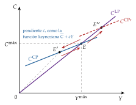
iii) Implicaciones
A corto plazo es más fácil estimular el consumo que frenarlo: las políticas fiscales expansivas son eficaces y las contractivas, poco, porque los hogares defienden el consumo alcanzado reduciendo su ahorro.
c) Evidencia empírica
Explica los 3 hechos de Kuznets, incluida la propensión media constante a largo plazo que la función keynesiana no lograba explicar.
d) Valoración
Aportaciones: el consumo se fija a partir de un concepto de renta distinto del de la renta del periodo, y las ideas de suavizar el consumo con el ahorro y de los hábitos influyen en las teorías posteriores (los hábitos vuelven en II.3).
Limitaciones: explica bien el comportamiento en la recesión, pero no con el mismo rigor cómo vuelve el consumidor a la recta de largo plazo; y es un enfoque estático, que no sale de un problema de optimización. Para eso hace falta la elección intertemporal.
I.2. Modelos dinámicos y microfundamentados
Conclusión anticipada: un consumidor que mira hacia delante y puede prestar y pedir prestado consume según sus recursos de toda la vida. Fisher da el marco; Friedman y Modigliani lo llevan a los datos y resuelven el enigma de Kuznets.
Los hogares no deciden su consumo solo con su renta de hoy, sino también con lo que esperan ganar (perspectiva forward-looking). Desde los años 50, la teoría del consumo añade fundamentos microeconómicos:4 el consumidor maximiza una utilidad intertemporal sujeto a una restricción presupuestaria intertemporal.
I.2.1. La elección intertemporal (Fisher, 1930)
a) Idea
Fisher (1930) plantea el consumo como una elección entre bienes de distintas fechas: el consumo de mañana tiene un precio en términos del de hoy, \(1/(1+r)\). Es el pistoletazo de salida de todas las teorías modernas del consumo.
Todo problema intertemporal se caracteriza con 3 piezas: la hipótesis de comportamiento, las preferencias y las restricciones presupuestarias.
b) Modelo
i) Supuestos
Comportamiento: un consumidor racional, que maximiza su utilidad, mira hacia delante y vive 2 periodos con certeza (previsión perfecta).
Preferencias: aditivas en el tiempo, con descuento exponencial [ver tema 3.A.29]: \[U(C_1,C_2)=u(C_1)+\beta\,u(C_2),\qquad u'>0,\quad u''<0,\qquad \beta\equiv\frac{1}{1+\rho},\] donde \(\rho\) es la tasa de descuento (la impaciencia)5 y \(u''<0\) recoge que la utilidad marginal decrece: el consumidor prefiere repartir su consumo entre periodos.6
Restricción presupuestaria: rentas \(Y_1\) e \(Y_2\) conocidas y un mercado de capitales perfecto, en el que se presta y se pide prestado sin límite al mismo tipo de interés real \(r\). Lo que no se consume hoy se ahorra y se consume mañana con sus intereses: el ahorro es el vehículo para repartir el consumo en el tiempo.
ii) Desarrollo
Problema: el valor actual del consumo no puede superar la riqueza \(\overline{W}\), el valor actual de las rentas: \[\begin{array}{rl}\displaystyle \max_{C_1,\,C_2} & \displaystyle u(C_1)+\beta\,u(C_2) \\ \text{s.a.} & C_1+\dfrac{C_2}{1+r}=Y_1+\dfrac{Y_2}{1+r}\equiv\overline{W}\end{array}\tag{3}\]
Condición de primer orden: la ecuación de Euler:7
\[u'(C_1)=\beta\,(1+r)\,u'(C_2)\tag{4}\]
Interpretación analítica: renunciar a una unidad de consumo hoy cuesta \(u'(C_1)\); ahorrada, da \(1+r\) unidades mañana, que valen \((1+r)\,u'(C_2)\) y, descontadas, \(\beta(1+r)\,u'(C_2)\). En el óptimo, al consumidor le da igual trasladar una unidad más de consumo de un periodo a otro.
Interpretación gráfica (gráfico 2): en el plano \((C_1,C_2)\), la recta presupuestaria pasa por la dotación \(A=(Y_1,Y_2)\) con pendiente \(-(1+r)\), y el óptimo \(C\) está donde una curva de indiferencia es tangente a ella. Si \(C_1<Y_1\), el consumidor presta; si \(C_1>Y_1\), pide prestado.
El caso de referencia: si el tipo de interés es igual a la tasa de descuento, \(r=\rho\), es decir, \(\beta(1+r)=1\), la ecuación de Euler da \(u'(C_1)=u'(C_2)\) y \[C_1=C_2=\frac{1+r}{2+r}\,\overline{W}:\] el consumo se iguala en el tiempo aunque la renta no lo haga, y su nivel depende de la riqueza \(\overline{W}\), no de la renta de cada periodo.8
Con \(T\) periodos y activos netos \(b_t\) el resultado es el mismo: el consumo de cada periodo depende de \(b_0\) más el valor actual de todas las rentas, y con \(\beta(1+r)=1\) es constante (anexo B).9
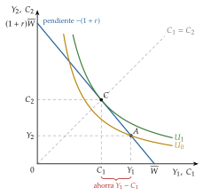
Fuente: elaboración propia a partir de Fisher (1930) y Romer (2019, cap. 8).
iii) Implicaciones
Lo que cuenta para consumir es la riqueza de toda la vida, no la renta del periodo: de aquí parte la teoría de la renta permanente.
El consumo se suaviza: el ahorro absorbe las diferencias entre renta y consumo. De aquí parte la teoría del ciclo vital.
La senda de la renta no importa para el consumo, pero sí para el ahorro, que es lo que queda de la renta del periodo tras consumir: se ahorra cuando la renta es alta y se desahorra cuando es baja.
Una política anunciada hoy que cambie la renta futura cambia el consumo de hoy.
c) Extensiones
Un tipo de interés distinto de la tasa de descuento: el consumo crece o decrece en el tiempo, tanto más cuanto mayor es la elasticidad de sustitución intertemporal, y una subida del tipo de interés tiene efectos sustitución, renta y riqueza. Se estudia en las salidas al modelo de Hall (II.3), sobre este mismo gráfico.
Restricciones de liquidez: si el hogar no puede pedir prestado, la recta presupuestaria se quiebra en \(A\) y la separación de Fisher se rompe (II.3).
Horizonte infinito y generaciones solapadas [ver tema 3.A.29]; renta endógena, si el hogar decide también cuánto trabaja [ver tema 3.A.25].
d) Valoración
El modelo da el armazón de todas las teorías posteriores, pero supone certeza sobre las rentas y mercados de capitales perfectos. Friedman y Modigliani lo llevan a los datos con 2 preguntas distintas: qué renta cuenta para consumir (la permanente) y cómo cambia la renta con la edad (el ciclo vital).
I.2.2. La hipótesis de la renta permanente (Friedman, 1957)
a) Idea
Friedman (1957), en A Theory of the Consumption Function, critica la función de consumo keynesiana con la que trabajaba la síntesis neoclásica [ver tema 3.A.5].10
Aplica la idea de Fisher: la renta que se observa mezcla un componente duradero y otro accidental, y solo el primero guía el consumo. Así resuelve el enigma de Kuznets.
b) Modelo
i) Supuestos
La renta y el consumo observados tienen un componente permanente y otro transitorio: \[Y_t=Y^P_t+Y^T_t,\qquad C_t=C^P_t+C^T_t.\]
La renta permanente es el flujo que se puede mantener en el tiempo consumiéndolo entero sin mermar la fuente de la que procede: el rendimiento de la riqueza total, humana y no humana (bonos, dinero, capital y valor actual de los salarios esperados), \(Y^P_t=r\,\overline{W}_t\).
La renta transitoria recoge lo accidental (una prima, un año malo) y el consumo transitorio, los gastos imprevistos (una enfermedad). Los 2 tienen media cero y no están correlacionados entre sí ni con los componentes permanentes.
ii) Desarrollo
Consumo: el consumo permanente es proporcional a la renta permanente, lo que refleja el deseo de suavizar el consumo: \[C^P_t=k\,Y^P_t.\tag{5}\] La proporción \(k\) no depende del nivel de la renta (las preferencias son homotéticas), sino del tipo de interés, de la composición de la riqueza y de los gustos (entre ellos, la edad y la incertidumbre de la renta). Cuanto mayor es el peso de la riqueza no humana, mayor es \(k\): hace menos falta una reserva para imprevistos y es más fácil pedir prestado con un activo como garantía que con el salario futuro. El efecto del tipo de interés es, en teoría, ambiguo.
Renta: la renta permanente no se observa. El hogar la estima con expectativas adaptativas a partir de la renta observada en el pasado, corrigiendo cada periodo una parte \(\gamma\) de su error: \[Y^P_t=Y^P_{t-1}+\gamma\,(Y_t-Y^P_{t-1})=\gamma\sum_{j=0}^{\infty}(1-\gamma)^j\,Y_{t-j},\qquad \gamma\in(0,1].\tag{6}\] Si un aumento de la renta persiste, se va incorporando a la renta permanente; si no, se trata como transitorio y se ahorra.11
iii) Implicaciones
Un cambio transitorio de la renta apenas mueve el consumo: se ahorra. Un cambio permanente lo mueve en la proporción \(k\).
Política fiscal: una rebaja de impuestos transitoria eleva poco la renta permanente y apenas mueve el consumo; el multiplicador es menor que el keynesiano, y solo las medidas que los hogares perciben como permanentes mueven el consumo.12
Política monetaria: puede mover el consumo a corto plazo, porque el tipo de interés cambia la riqueza y con ella la renta permanente (efecto riqueza), y también \(k\); a largo plazo es neutral.13
Estabilidad: el consumo privado es más estable que la renta y su peso en la demanda no cae al crecer la renta, así que no hay estancamiento secular y la política de estabilización no necesita ser tan activa. Es una de las bases de la crítica monetarista a la economía keynesiana [ver tema 3.A.5].
c) Evidencia empírica: la solución del enigma de Kuznets
Corte transversal: los hogares de renta alta lo son en parte por suerte (\(Y^T>0\)) y los de renta baja, por mala suerte (\(Y^T<0\)), y su consumo no sigue esa parte de la renta. La recta de regresión del consumo sobre la renta observada es más plana que \(k\) y corta el eje en positivo, como la función keynesiana: \[\hat{b}=\frac{\operatorname{cov}(C,Y)}{\operatorname{var}(Y)}=k\,\frac{\operatorname{var}(Y^P)}{\operatorname{var}(Y^P)+\operatorname{var}(Y^T)}<k.\tag{7}\]
Series cortas: cuando la renta sube, al principio se trata como transitoria y el consumo sube poco: la propensión media cae. En el gráfico 3, el consumo pasa de \(E\) a \(F^T\), sobre la recta de corto plazo. Si la subida persiste, se incorpora a la renta permanente y el consumo pasa a \(F^P\), sobre \(C^P=kY^P\); si desaparece, vuelve a \(E\). Friedman acepta, por tanto, la función keynesiana a corto plazo.
Series largas: casi toda la varianza de la renta es permanente, \(\hat{b}\to k\), y la propensión media es constante.
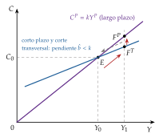
Fuente: elaboración propia a partir de Friedman (1957).
d) Valoración
La renta permanente no se observa, y las expectativas adaptativas suponen que los hogares cometen errores sistemáticos al estimarla.
Hay una contradicción interna: el consumidor mira hacia delante para suavizar su consumo, pero hacia atrás para estimar su renta. La literatura ha pasado a las expectativas racionales, con las que Hall llevará la hipótesis hasta sus últimas consecuencias (II.1).
I.2.3. La hipótesis del ciclo vital (Modigliani, Brumberg y Ando)
a) Idea
Modigliani y Brumberg (1954) y Ando y Modigliani (1963) ponen el acento en lo que Friedman deja en segundo plano: la renta cambia de forma previsible con la edad, baja al principio, alta en la madurez y casi nula en la jubilación, y el ahorro es el instrumento para suavizar el consumo a lo largo de la vida.14
Es compatible con la renta permanente: las 2 aplican el modelo de Fisher. Es el refrán del enganche llevado a la vida: se guarda en los años de vacas gordas, la edad activa, para los de vacas flacas, la jubilación.
b) Modelo
i) Supuestos
El consumidor vive \(T\) periodos, \(t=1,\dots,T\), y trabaja los \(R\) primeros con una renta laboral \(Y^L_t\) que sigue una joroba: baja al principio, alta en la madurez y nula desde la jubilación.
Certidumbre, mercado de capitales perfecto y sin herencias: nace y muere sin activos, \(b_1=b_{T+1}=0\).
El tipo de interés es igual a la tasa de descuento, \(\beta(1+r)=1\), y, para simplificar, \(r=\rho=0\): por la ecuación de Euler (4), el consumo es el mismo en todos los periodos: es plano.15
ii) Desarrollo
Consumo individual: en cada periodo, el consumidor reparte por igual entre los años que le quedan sus activos y las rentas laborales que le faltan por cobrar: \[C_t=\frac{1}{T-t+1}\Big[\,b_t+\sum_{s=t}^{T}Y^L_s\Big];\qquad\text{al nacer, }C=\frac{1}{T}\sum_{s=1}^{T}Y^L_s.\tag{8}\]
Ahorro y riqueza (gráfico 4): el consumidor se endeuda (o recibe ayuda de su familia) al principio, cuando la renta es menor que el consumo; ahorra en la madurez, y desahorra en la jubilación, cuando la renta laboral es nula. Sus activos \(b_t\) (panel inferior del gráfico) son negativos al principio, crecen hasta la jubilación, en \(R\), y se agotan al final de la vida, en \(T\).
Consumo agregado: si la estructura por edades de la población, la distribución de la renta por edades y las preferencias son estables, al sumar los consumos individuales sale la función de Ando y Modigliani (1963): \[C_t=\alpha_L\,Y^L_t+\alpha_b\,b_t,\tag{9}\] donde \(\alpha_L\) es la propensión a consumir la renta laboral y \(\alpha_b\) la de la riqueza, \(b_t\), que ahora son los activos netos agregados de los hogares.
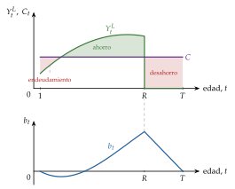
Fuente: elaboración propia a partir de Modigliani y Brumberg (1954).
iii) Implicaciones
El enigma de Kuznets: dividiendo (9) por la renta, la propensión media depende de \(b_t/Y_t\). A corto plazo la riqueza se mueve menos que la renta, \(b_t/Y_t\) cae cuando la renta sube y la propensión media también; a largo plazo, \(b_t/Y_t\) es estable y la propensión media es constante.
Ahorro y crecimiento: sin crecimiento, el ahorro de los activos compensa el desahorro de los jubilados y el ahorro agregado es nulo. Si la población o la productividad crecen, los que ahorran son más o tienen más renta que los que desahorran. La tasa de ahorro depende del ritmo de crecimiento, no del nivel de la renta.
Demografía: el envejecimiento de la población reduce el ahorro agregado y presiona sobre los sistemas de pensiones [ver tema 4.B.24]. El modelo de generaciones solapadas es la versión de equilibrio general de esta idea [ver tema 3.A.29].
Política fiscal: un cambio transitorio de la renta se reparte entre los años que quedan de vida, así que su efecto sobre el consumo es mayor cuanto mayor es el hogar. Las pensiones públicas sustituyen ahorro privado.
c) Evidencia empírica
Explica el enigma de Kuznets y la relación positiva entre crecimiento y tasa de ahorro entre países.
Pero los mayores desahorran mucho menos de lo que predice, y una parte grande de la riqueza se transmite por herencias: Kotlikoff y Summers (1981) atribuyen a las transferencias entre generaciones la mayor parte del capital de Estados Unidos.
El consumo no es plano a lo largo de la vida: tiene forma de joroba y sigue de cerca a la renta, sobre todo en los hogares jóvenes.
d) Valoración
Ventaja: introduce la demografía en la teoría del consumo y del ahorro.
Críticas:
no tiene en cuenta las restricciones de liquidez, que impiden endeudarse al principio de la vida;
no explica que los mayores desahorren tan poco: el motivo herencia y el miedo a vivir más de lo previsto (precaución) lo explican mejor;
supone información perfecta sobre las rentas de toda la vida.
Recapitulación: con certidumbre y mercados perfectos, el consumo depende de los recursos de toda la vida y se suaviza; la renta permanente y el ciclo vital son 2 caras de la misma idea, y las 2 resuelven el enigma de Kuznets. Pero las 2 suponen que el consumidor sabe lo que ganará, y la realidad es que decide con incertidumbre. Una vez estudiado el consumo con certidumbre, pasamos a analizar qué ocurre cuando la renta futura es incierta y las expectativas son racionales.
II. El consumo de bienes no duraderos con incertidumbre
En el cante: Hall (3′), con el problema, la ecuación de Euler estocástica, que sustituye a la de Fisher, y los 3 pasos hasta \(C_{t+1}=C_t+\varepsilon_{t+1}\); las implicaciones, de palabra. La contrastación (2′30″), con la ecuación de Campbell y Mankiw y la idea de la paradoja de Deaton; los cheques fiscales, los hogares hand-to-mouth y el caso de España, en una frase cada uno. Las salidas (5′30″), cambiando una a una las piezas del problema de Hall (nota al principio de II.3), con la tabla de la prudencia de palabra y el gráfico de Fisher con la recta quebrada de la liquidez. La forma cerrada de Hall, la deriva del consumo con incertidumbre, la derivación del C-CAPM y las notas son de profundización.
Conclusión anticipada: si el consumidor optimiza y forma expectativas racionales, solo las noticias cambian su consumo, que sigue un paseo aleatorio. Los datos no lo confirman del todo: el consumo responde a la renta corriente más de lo que permite la teoría. Las salidas a ese fallo (la prudencia, los hábitos, el crédito, la heterogeneidad de los hogares y los sesgos de conducta) devuelven a la renta corriente parte del papel que le daba Keynes.
El bloque I suponía que el consumidor conoce su renta futura. Levantamos ahora ese supuesto: la renta de mañana es incierta y las expectativas, racionales. Seguimos con los bienes no duraderos.
II.1. La hipótesis del paseo aleatorio (Hall, 1978)
a) Idea
Conclusión anticipada: con expectativas racionales, nada de lo que el consumidor sabe hoy ayuda a predecir cómo cambiará su consumo mañana: el mejor predictor del consumo de mañana es el de hoy.
Hall (1978) plantea el problema de Fisher y Friedman con 2 cambios:
la renta futura es incierta y el consumidor maximiza su utilidad esperada [ver tema 3.A.10];
forma sus expectativas de manera racional [ver tema 3.A.6]: usa de forma eficiente toda la información de que dispone y no comete errores sistemáticos.
Así desaparece la contradicción de Friedman: el consumidor ya no mira hacia atrás para estimar su renta permanente, sino hacia delante.
La intuición: en \(t\), el consumidor fija su consumo con toda la información disponible. Si en \(t+1\) lo cambia, es porque ha llegado información nueva, que por definición no se podía prever en \(t\): si se hubiera podido prever, ya estaría en el consumo de \(t\).
b) Modelo
i) Supuestos
Comportamiento: el consumidor vive un número indefinido de periodos y maximiza la utilidad esperada de su consumo con expectativas racionales; \(\mathbb{E}_t[\cdot]\) es la esperanza condicionada a la información de \(t\).
Preferencias: aditivas en el tiempo, con el factor de descuento \(\beta\equiv 1/(1+\rho)\), y una utilidad instantánea cuadrática, \[u(C_t)=C_t-\frac{b}{2}\,C_t^2,\qquad b>0,\] en el tramo en que la utilidad marginal, \(u'(C_t)=1-b\,C_t\), es positiva.16
Restricción presupuestaria: la renta laboral \(Y_t\) es incierta; el hogar ahorra o se endeuda en un solo activo sin riesgo que rinde \(r\), sin más límite que no endeudarse sin fin (condición de no-Ponzi), y el tipo de interés es igual a la tasa de descuento, \(\beta(1+r)=1\).
ii) Desarrollo
Problema: el de Fisher con muchos periodos y con esperanzas; la restricción se cumple en cada periodo y en cada estado de la naturaleza: \[\begin{array}{rl}\displaystyle \max_{\{C_t\}} & \displaystyle \mathbb{E}_0\Big[\sum_{t=0}^{\infty}\beta^t\,u(C_t)\Big] \\ \text{s.a.} & b_{t+1}=(1+r)\,b_t+Y_t-C_t \\ & \lim_{T\to\infty}\dfrac{b_T}{(1+r)^T}\geq 0 \\ & b_0\ \text{dado}\end{array}\tag{10}\]
Condición de primer orden: renunciar a una unidad de consumo en \(t\) cuesta \(u'(C_t)\); ahorrada, rinde \(1+r\) unidades en \(t+1\), que valen \((1+r)\,u'(C_{t+1})\), pero el consumidor no sabe cuánto valdrán, porque no conoce \(C_{t+1}\). En el óptimo, el coste es igual al beneficio esperado y descontado. Es la ecuación de Euler estocástica, la (4) con esperanzas:
\[u'(C_t)=\beta\,(1+r)\,\mathbb{E}_t\big[u'(C_{t+1})\big]\tag{11}\]
Paso 1: con \(\beta(1+r)=1\), la utilidad marginal es una martingala: su valor esperado mañana es el de hoy, \(u'(C_t)=\mathbb{E}_t[u'(C_{t+1})]\).
Paso 2: con la utilidad cuadrática, la utilidad marginal es lineal y la esperanza la atraviesa: \(1-b\,C_t=1-b\,\mathbb{E}_t[C_{t+1}]\), es decir, \(\mathbb{E}_t[C_{t+1}]=C_t\).
Paso 3: llamando \(\varepsilon_{t+1}\equiv C_{t+1}-\mathbb{E}_t[C_{t+1}]\) al error de predicción, que con expectativas racionales tiene media cero y no está correlacionado con nada de lo que se sabe en \(t\), \[C_{t+1}=C_t+\varepsilon_{t+1},\qquad \mathbb{E}_t[\varepsilon_{t+1}]=0.\tag{12}\] El consumo sigue un paseo aleatorio: el mejor predictor del consumo de mañana es el de hoy, y \(\varepsilon_{t+1}\) recoge las noticias sobre la renta permanente que llegan en \(t+1\).17
Cuánto cambia el consumo con una noticia: con un horizonte finito y \(r=\rho=0\), el consumidor consume en cada periodo la parte proporcional de sus activos y de la renta que espera ganar, y el cambio de su consumo es la revisión de esas expectativas repartida entre los periodos que le quedan (anexo C). Es la renta permanente de Friedman con expectativas racionales.
iii) Implicaciones
El cambio del consumo no se puede predecir: ni la renta pasada, ni la riqueza, ni el consumo anterior al último ayudan a predecir \(C_{t+1}-C_t\). Es una predicción que se contrasta sin modelizar la renta, y esa es la gran aportación metodológica de Hall: basta con la ecuación de Euler.
Solo importan las sorpresas: una medida de política mueve el consumo cuando se anuncia, no cuando se aplica; una vez anunciada, ya está en \(C_t\).
Las sorpresas permanentes pesan más que las transitorias: el consumo se mueve en lo que cambia la renta permanente, así que una rebaja de impuestos transitoria apenas lo mueve y su multiplicador es pequeño.
Crítica de Lucas: el consumo depende de lo que se espera de la política, de modo que una función de consumo estimada con una política no sirve para predecir los efectos de otra [ver tema 3.A.6]. La ecuación de Euler, en cambio, no depende de la política y se estima directamente.
c) Valoración
La utilidad cuadrática es una forma muy particular: la utilidad marginal puede hacerse negativa, la aversión absoluta al riesgo crece con la riqueza, lo contrario de lo que se observa, y su tercera derivada es nula, así que excluye el motivo precaución [ver tema 3.A.10].
Supone, además, un mercado de capitales perfecto, un consumidor representativo y plena optimización. Si los datos rechazan el paseo aleatorio, el fallo puede estar en cualquiera de esas piezas. Antes de cambiarlas, veamos qué dicen los datos.
II.2. La contrastación empírica: exceso de sensibilidad y exceso de suavidad
Conclusión anticipada: el consumo responde a los cambios previsibles de la renta más de lo que dice Hall (exceso de sensibilidad) y a los imprevistos, menos (exceso de suavidad). La renta permanente explica buena parte del consumo, pero no todo, y lo que falta depende sobre todo de la liquidez de los hogares.
Una vez planteado el modelo, pasamos a ver cómo se ha contrastado: primero con datos agregados y después con datos de hogares.
a) Exceso de sensibilidad
El primer contraste es del propio Hall (1978): regresa el cambio del consumo de Estados Unidos sobre variables conocidas en \(t\). La renta y el consumo pasados apenas lo predicen, pero los precios de las acciones sí.
Flavin (1981) estima a la vez el proceso de la renta y el del consumo, y encuentra que el consumo responde a los cambios de la renta que se podían prever: es el exceso de sensibilidad.
Campbell y Mankiw (1989) lo miden con 2 tipos de hogares: una fracción \(\lambda\) de la renta va a hogares que consumen su renta corriente y el resto, a hogares que siguen a Hall.18 El cambio del consumo agregado es entonces \[\Delta C_t=\mu+\lambda\,\Delta Y_t+\varepsilon_t,\tag{13}\] y con Hall debería ser \(\lambda=0\). Con datos de Estados Unidos de 1953-1986, estimando con variables instrumentales (retardos, que solo recogen la parte previsible de \(\Delta Y_t\)), \(\lambda\) sale en torno a 0,5: alrededor de la mitad de la renta va a hogares que no suavizan su consumo.19
b) Exceso de suavidad: la paradoja de Deaton
La renta agregada crece de forma persistente: una subida inesperada anuncia más subidas en el futuro. Si el consumo sigue a la renta permanente, esta debería subir más que la corriente, y el consumo tendría que oscilar más que la renta: con los datos trimestrales de Estados Unidos, la renta permanente varía casi el doble que la corriente.
En los datos ocurre lo contrario: el consumo oscila menos que la renta. Es el exceso de suavidad o paradoja de Deaton.
Deaton encuentra la salida en los datos de hogares: la renta de cada hogar es mucho menos persistente que la agregada, porque la dominan sorpresas individuales que no se mueven con el ciclo, y el hogar que no puede endeudarse usa sus activos como colchón.20 El agente representativo de los modelos agregados, viene a decir Deaton, sabe demasiado y vive demasiado tiempo.
c) Evidencia con datos de hogares
Cambios de renta conocidos de antemano:
Shea (1995) usa hogares cuyo salario fija un convenio colectivo plurianual, de modo que su subida se conoce de antemano: los cambios previsibles del salario están correlacionados de forma significativa con los del gasto en alimentación, y el gasto reacciona con más fuerza a las bajadas previstas del salario que a las subidas, una asimetría que las restricciones de liquidez no explican.
El gasto responde también a la retención de las cotizaciones a la Seguridad Social, que deja de aplicarse cuando el salario del año supera el tope de cotización, y a las devoluciones del impuesto sobre la renta.
En cambio, los hogares de Alaska no cambian su consumo cuando cobran el dividendo anual del fondo del petróleo del Estado, grande y conocido de antemano: la renta permanente funciona mejor con cambios grandes y visibles.
Experimentos naturales: Estados Unidos envió cheques fiscales en 2001 y en 2008, con fechas de cobro que dependían de las últimas cifras del número de la seguridad social, es decir, prácticamente al azar.
Los hogares gastaron en bienes no duraderos entre el 20 y el 40 % del cheque de 2001 en el trimestre en que lo recibieron.
Con los de 2008, el gasto total, contando los duraderos y sobre todo los coches, llegó a entre el 50 y el 90 %.
La respuesta es mayor en los hogares con poca liquidez.
Hogares que viven al día: Kaplan, Violante y Weidner (2014) llaman hand-to-mouth a los hogares con muy pocos activos líquidos, que consumen casi toda su renta: «lo comido por lo servido».
En Estados Unidos son en torno a un tercio de los hogares, y 2 de cada 3 no son pobres: tienen vivienda o planes de pensiones, pero no liquidez (wealthy hand-to-mouth).
En España, Francia e Italia son en torno al 20 %.
d) El caso de España
Renta permanente: con datos de las comunidades autónomas de 1980-2003, Núñez Carrasco (2010) encuentra que, ante una sorpresa de renta, el consumo se revisa en el mismo sentido que la renta permanente, pero menos que ella: la hipótesis se cumple solo «en un sentido débil».
Hogares jóvenes: en los hogares de 25 a 34 años, los más jóvenes no anticipan su renta futura al decidir cuánto consumen, y los que se acercan a la madurez sí.
Propensión a consumir y liquidez: en la Encuesta Financiera de las Familias, la parte que los hogares dicen que gastarían de un premio igual a un mes de renta bajó del 41,3 % en 2017 al 40,1 % en 2022, sobre todo en los hogares de renta alta, y subió 4,7 puntos en los que tenían menos activos financieros; ese cambio explicaría unos 2 puntos de la subida de la tasa de ahorro. La sensibilidad a la renta se concentra donde hay poca liquidez, como en los hogares hand-to-mouth.
Riqueza: la riqueza inmobiliaria pesa en el consumo de los hogares españoles más que la financiera.
Política fiscal: la deducción de hasta 400 euros en el impuesto sobre la renta de 2008, que se cobró a través de las retenciones, es el equivalente español de los cheques de Estados Unidos.
Ahorro y pandemia: la tasa de ahorro de los hogares saltó al 25,6 % de su renta disponible en el segundo trimestre de 2020 (gráfico 5), sobre todo por ahorro forzoso, con los comercios cerrados, y en parte por precaución. El ahorro extraordinario acumulado se gastó poco: se quedó sobre todo en depósitos y fondos de inversión y se concentró en los hogares de más renta, como predice la renta permanente para un ingreso que se percibe como transitorio.
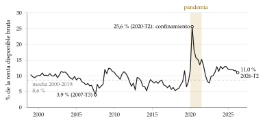
Fuente: INE, Cuentas trimestrales no financieras de los sectores institucionales (Instituto Nacional de Estadística, 2026c).
Recapitulación: la renta permanente no es falsa, pero es incompleta. El consumo depende también de la renta corriente, tanto más cuanto menos liquidez tiene el hogar, y responde poco a las sorpresas. Para explicarlo hay que cambiar alguna pieza del problema de Hall, y eso es lo que ha hecho la literatura desde los años 80.
II.3. Las salidas al modelo de Hall
El problema (10) y la ecuación de Euler estocástica (11) vienen de II.1, y este apartado se canta cambiando sus piezas una a una; cada cambio lleva un número:
la función de utilidad: si no es cuadrática, ahorro precautorio; si no es separable en el tiempo, hábitos;
el tipo de interés y el de descuento: \(r\neq\rho\) y, si el rendimiento es incierto, el C-CAPM;
la restricción presupuestaria: restricciones de liquidez, sobre el gráfico de Fisher de I.2.1, cuya recta se quiebra en la dotación; y la renta endógena;
el agente representativo: hogares heterogéneos;
la plena optimización: economía conductual.
Cada pieza, en 1 o 2 frases y con el hecho que explica (exceso de sensibilidad o de suavidad); el detalle formal es para las preguntas del tribunal. Al final, una frase anuncia el bloque III: lo que queda por cambiar es el bien.
Conclusión anticipada: cada pieza del problema de Hall que se cambia explica una parte de la evidencia, y casi todas apuntan en la misma dirección: el consumo depende de la renta corriente más de lo que dice la teoría, y la política fiscal es más eficaz.
Los datos rechazan el paseo aleatorio, pero el modelo de Hall es un conjunto de supuestos y el fallo puede estar en cualquiera de ellos. Pasamos a levantarlos uno a uno, empezando por la función de utilidad.
II.3.1. La utilidad (1): prudencia y ahorro precautorio
a) Idea
La utilidad cuadrática tiene una propiedad muy particular: su tercera derivada es nula. Con ella, el riesgo no cambia el consumo: el hogar actúa como si la renta futura fuera igual a su valor esperado (equivalencia cierta).
Si la tercera derivada es positiva, el riesgo lleva a ahorrar más: es el ahorro precautorio. «Hombre prevenido vale por dos».
b) Modelo
i) Supuestos
Un hogar vive 2 periodos, gana \(Y_1\) hoy y una renta incierta \(\tilde{Y}_2\) mañana, y ahorra \(S\equiv Y_1-C_1\) al tipo \(r\). Las preferencias son las de Fisher, con esperanzas.
ii) Desarrollo
Problema: \[\begin{array}{rl}\displaystyle \max_{C_1} & \displaystyle u(C_1)+\beta\,\mathbb{E}\big[u(\tilde{C}_2)\big] \\ \text{s.a.} & \tilde{C}_2=(1+r)\,S+\tilde{Y}_2 \\ & S\equiv Y_1-C_1\end{array}\] con la condición de primer orden \(u'(C_1)=\beta(1+r)\,\mathbb{E}\big[u'(\tilde{C}_2)\big]\): la ecuación (11) con 2 periodos.
Interpretación gráfica (gráfico 6): si \(u'\) es convexa (\(u'''>0\)), por la desigualdad de Jensen, \(\mathbb{E}[u'(\tilde{C}_2)]>u'(\mathbb{E}[\tilde{C}_2])\). El riesgo eleva la utilidad marginal esperada de mañana y, para restablecer la igualdad, el hogar consume menos hoy y ahorra más que si recibiera \(\mathbb{E}[\tilde{Y}_2]\) con certeza.
La condición: no es la aversión al riesgo (\(u''<0\)), sino la prudencia, \(u'''>0\), que es necesaria y suficiente para que cualquier riesgo de media cero sobre la renta futura aumente el ahorro, sea cual sea el signo de \(u''\). Kimball (1990) la mide con el coeficiente de prudencia absoluta, \(-u'''/u''\), por analogía con la aversión absoluta de Arrow y Pratt [ver tema 3.A.10].
La cuadrática frente a la CRRA (tabla 1, la misma que en la elección con riesgo [ver tema 3.A.10]): la cuadrática es aversa, pero no prudente; la CRRA es aversa y prudente, con una prudencia absoluta de \((\theta+1)/C\). Y como la aversión absoluta decreciente (DARA), la hipótesis más aceptada, implica prudencia, el ahorro precautorio es la regla y no la excepción.
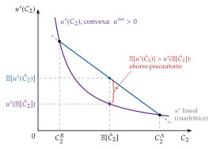
| Cuadrática | CRRA | |
|---|---|---|
| \(u(C)\) | \(C-\tfrac{b}{2}C^2\) | \(\dfrac{C^{1-\theta}-1}{1-\theta}\) |
| \(u'(C)\) | \(1-bC\) | \(C^{-\theta}\) |
| \(u''(C)\) | \(-b<0\) (averso) | \(-\theta C^{-\theta-1}<0\) (averso) |
| \(u'''(C)\) | \(0\) (sin prudencia) | \(\theta(\theta+1)C^{-\theta-2}>0\) (prudente) |
Fuente: elaboración propia a partir de Fernández-Villaverde y Guerrón-Quintana (2020, tabla 1), con la notación del temario (\(\theta\) en lugar de \(\sigma\)).
iii) Implicaciones
El consumo crece aunque \(r=\rho\): con la CRRA, la ecuación de Euler da una senda de consumo creciente, tanto más cuanto mayor es la incertidumbre (anexo C): \[\mathbb{E}_t\big[\Delta\ln C_{t+1}\big]\simeq\frac{1}{\theta}\,(r-\rho)+\frac{\theta}{2}\,\operatorname{var}_t\big(\Delta\ln C_{t+1}\big).\] Un aumento del riesgo reduce el consumo de hoy.
Exceso de sensibilidad: el hogar con pocos activos tiene más que perder si la renta cae y consume una parte mayor de cada euro adicional: la propensión a consumir de la renta transitoria es mayor que en Hall.
Exceso de suavidad: ante una sorpresa de renta, el hogar guarda una parte como colchón.
En el agregado: más incertidumbre eleva el ahorro deseado y baja el tipo de interés real de equilibrio, lo que empuja el consumo en sentido contrario; el efecto final sobre la actividad es ambiguo. El ahorro precautorio es una de las piezas del debate sobre el estancamiento secular y los tipos de interés naturales bajos [ver tema 3.A.40].
c) Extensiones
El ahorro de colchón (buffer stock): si el hogar es impaciente (\(\rho>r\)) y prudente, no acumula sin límite. Se fija un objetivo de riqueza en relación con su renta permanente, ahorra si está por debajo y desahorra si está por encima, y durante buena parte de la vida su consumo sigue de cerca a su renta.
Liquidez: las restricciones de liquidez y la prudencia se refuerzan entre sí (II.3.5).
d) Evidencia empírica
Con datos de Estados Unidos, los hogares se comportan como en el ahorro de colchón hasta los 40 años, aproximadamente, y después ahorran para la jubilación como en el ciclo vital.
En España, más incertidumbre macroeconómica en una comunidad autónoma reduce el consumo de sus familias, y el ahorro de los hogares se disparó en 2020 (gráfico 5).
e) Valoración
Es la salida más aceptada: solo exige una utilidad con aversión absoluta decreciente, y explica a la vez el exceso de sensibilidad y el de suavidad. A cambio, la ecuación de Euler deja de tener una solución sencilla y el modelo se resuelve con métodos numéricos.
II.3.2. La utilidad (2): preferencias no separables y hábitos
a) Idea
Si la utilidad de hoy depende del consumo de ayer, la utilidad deja de ser aditivamente separable en el tiempo. Con hábitos, lo que da utilidad es el consumo en relación con lo que uno está acostumbrado a consumir. Es la formalización del efecto trinquete de Duesenberry (I.1.2).
b) Modelo
i) Supuestos
Los de Hall, con una utilidad instantánea que depende del consumo sobre el hábito, \(u(C_t-hC_{t-1})\), con \(0\leq h<1\).
ii) Desarrollo
Con la utilidad cuadrática y \(\beta(1+r)=1\), la variable que sigue una martingala ya no es el consumo, sino el consumo sobre el hábito, \(C_t-hC_{t-1}\):21 \[C_{t+1}-h\,C_t=C_t-h\,C_{t-1}+\varepsilon_{t+1}\quad\Longrightarrow\quad \Delta C_{t+1}=h\,\Delta C_t+\varepsilon_{t+1}.\]
Las variaciones del consumo están positivamente autocorrelacionadas y son, en parte, predecibles: los hábitos rompen el paseo aleatorio.
iii) Implicaciones
El consumo responde a las noticias de forma gradual (exceso de suavidad) y con forma de joroba, como en los datos agregados. Por eso los modelos neokeynesianos de equilibrio general dinámico y estocástico incluyen hábitos [ver tema 3.A.42].
Cerca del hábito, el hogar es muy averso al riesgo, lo que ayuda a explicar el enigma de la prima de riesgo (II.3.4).
c) Evidencia empírica
Los modelos agregados necesitan hábitos fuertes para reproducir la inercia del consumo, pero con datos de hogares apenas se encuentran.
Un metaanálisis de 567 estimaciones da un \(h\) medio en torno a 0,6 con datos agregados y en torno a 0,1 con datos de hogares: parte de la persistencia agregada puede venir de la agregación o de la información imperfecta, y no de los hábitos de cada hogar.
II.3.3. El tipo de interés (1): distinto de la tasa de descuento
a) Idea
Hall supone \(\beta(1+r)=1\). Si el tipo de interés es distinto de la tasa de descuento, el consumo tiene una tendencia: lo que se puede predecir del consumo sale del tipo de interés, no de la renta. Es la extensión de Fisher que dejamos pendiente en I.2.1, sobre el mismo gráfico.
b) Modelo
i) Supuestos
Los de Fisher en 2 periodos, con certidumbre, y una utilidad con aversión relativa al riesgo constante (CRRA): \[u(C)=\frac{C^{1-\theta}-1}{1-\theta}\quad(\ln C\ \text{si}\ \theta=1),\qquad \theta>0,\] donde \(\theta\) es el coeficiente de aversión relativa al riesgo y \(1/\theta\) la elasticidad de sustitución intertemporal (ESI).22
ii) Desarrollo
Con \(u'(C)=C^{-\theta}\), la ecuación de Euler (4) se escribe \[\frac{C_2}{C_1}=\big[\beta(1+r)\big]^{1/\theta}=\left(\frac{1+r}{1+\rho}\right)^{1/\theta},\qquad \ln\frac{C_2}{C_1}\simeq\frac{1}{\theta}\,(r-\rho),\] y como \(C_2/C_1\) es 1 más la tasa de crecimiento del consumo, la ecuación da la forma de la senda de consumo.
El signo: el consumo crece si \(r>\rho\), es constante si \(r=\rho\) y decrece si \(r<\rho\). Que el consumo crezca no dice si el hogar presta o pide prestado: eso depende de cómo crezca su renta.
La intensidad: cuanto mayor es la ESI, más responde el crecimiento del consumo a la diferencia entre \(r\) y \(\rho\). Un hogar con una ESI alta tolera mejor un consumo desigual entre periodos: no es que le guste la variabilidad, sino que le disgusta menos.
Una subida del tipo de interés (gráfico 7): la recta presupuestaria gira sobre la dotación \(A\) y se hace más inclinada. Sobre \(C_1\) actúan 3 efectos:
un efecto sustitución, negativo: el consumo de hoy se encarece en términos del de mañana;
un efecto renta, positivo: el consumo de mañana se abarata;
un efecto riqueza, negativo: el valor actual de la renta futura, \(Y_2/(1+r)\), cae.
Los efectos renta y riqueza juntos tienen el signo del ahorro, \(Y_1-C_1\). El que pide prestado consume menos hoy; en el que presta, el efecto es ambiguo. Es la ecuación de Slutsky con dotación [ver tema 3.A.9].
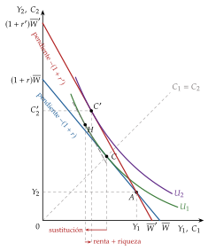
Fuente: elaboración propia a partir de Fisher (1930) y Romer (2019, cap. 8).
iii) Implicaciones
Con incertidumbre, la ecuación de Euler estocástica con la CRRA da la misma tendencia, \(\mathbb{E}_t[\Delta\ln C_{t+1}]\simeq(r-\rho)/\theta\), más el término precautorio de II.3.1: lo que se puede predecir del consumo sale del tipo de interés y del riesgo, no de la renta.
Política fiscal: un trato fiscal más favorable a los intereses del ahorro solo eleva mucho el ahorro si la ESI es alta.
Política monetaria: una bajada del tipo de interés adelanta consumo por la vía de la sustitución intertemporal, tanto más cuanto mayor es la ESI. Es el canal del tipo de interés de los modelos neokeynesianos [ver tema 3.A.37].
c) Evidencia empírica
El crecimiento del consumo apenas responde al tipo de interés real: la ESI estimada es pequeña, próxima a cero.
d) Valoración
Con una ESI baja, el tipo de interés mueve poco el consumo por esta vía, y la política monetaria actúa sobre todo por otras: la renta y el empleo, la riqueza y el crédito [ver tema 3.A.37].
El modelo supone, además, que el rendimiento del ahorro es seguro.
II.3.4. El tipo de interés (2): rendimiento incierto y C-CAPM
a) Idea
Si el hogar puede ahorrar en varios activos con rendimiento incierto, la ecuación de Euler se cumple para cada uno, y las decisiones de consumo y de cartera se toman a la vez. Es el modelo de valoración de activos basado en el consumo (C-CAPM).
b) Modelo
i) Supuestos
Los de Hall, con varios activos \(i\) de rendimiento real incierto \(r_{i,t+1}\) y un activo sin riesgo que rinde \(r_f\).
ii) Desarrollo
Para cada activo, la ecuación (11) se escribe con su rendimiento dentro de la esperanza, porque ya no es seguro: \[1=\mathbb{E}_t\big[m_{t+1}\,(1+r_{i,t+1})\big],\qquad m_{t+1}\equiv\beta\,\frac{u'(C_{t+1})}{u'(C_t)},\tag{14}\] donde \(m_{t+1}\) es el factor de descuento estocástico: alto cuando el consumo de mañana es bajo.
De ahí sale la prima de cada activo sobre el activo sin riesgo (anexo C); con la CRRA y rendimientos lognormales, \[\mathbb{E}_t[r_{i,t+1}]-r_f=-(1+r_f)\operatorname{Cov}_t\big(m_{t+1},r_{i,t+1}\big)\simeq\theta\operatorname{Cov}_t\big(r_{i,t+1},\Delta\ln C_{t+1}\big).\]
iii) Implicaciones
Se paga por el riesgo de rendir poco cuando el consumo es bajo. Un activo que rinde mucho cuando el consumo ya es alto no asegura y exige una prima; uno que rinde cuando el consumo cae es un seguro y se acepta con menos rendimiento.
Lo que cuenta es la covarianza con el consumo, no la varianza del activo. El CAPM es el caso particular en que el consumo se mueve con la cartera de mercado [ver tema 3.B.23].
c) Evidencia empírica
L. P. Hansen y Singleton (1983) estiman la ecuación (14) con datos agregados de Estados Unidos y rechazan sus restricciones.
Mehra y Prescott (1985) plantean el enigma de la prima de riesgo: entre 1889 y 1978, las acciones rindieron en Estados Unidos unos 6 puntos al año más que los activos seguros, pero el consumo varía tan poco que el modelo, con aversiones razonables (\(\theta\leq 10\)), no da una prima mayor de 0,4 puntos. Los hábitos son una de las respuestas.
II.3.5. La restricción presupuestaria: restricciones de liquidez
a) Idea
Hall supone que el hogar puede pedir prestado al mismo tipo al que presta. En la práctica, el tipo de los préstamos es mayor que el de los depósitos, y muchos hogares no pueden endeudarse contra su renta futura: el banco no acepta el salario de mañana como garantía o el hogar ya ha llegado a su límite de endeudamiento.
b) Modelo
i) Supuestos
Los de Hall, con una restricción más: el hogar no puede tener activos negativos, \(b_{t+1}\geq 0\).
ii) Desarrollo
Interpretación gráfica (gráfico 8): en el plano de Fisher, la recta presupuestaria se quiebra en la dotación \(A\), porque desaparece el tramo de pedir prestado. El hogar que querría endeudarse, porque espera mucha más renta mañana, se queda en la esquina, \(C_1=Y_1\): consume su renta corriente.
Interpretación analítica: la ecuación de Euler pasa a ser una desigualdad, \[u'(C_t)\geq\beta(1+r)\,\mathbb{E}_t\big[u'(C_{t+1})\big],\] que se cumple con desigualdad estricta cuando la restricción aprieta; entonces \(C_t=Y_t+(1+r)\,b_t\): el hogar querría consumir más hoy y no puede.
Los cambios previsibles de la renta pasan al consumo cuando llegan, no cuando se anuncian, y la separación de Fisher entre la decisión de riqueza y la de consumo se rompe.
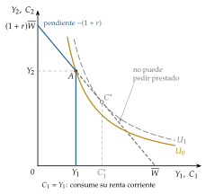
Fuente: elaboración propia a partir de Fisher (1930) y Romer (2019, cap. 8).
iii) Implicaciones
Exceso de sensibilidad: el consumo de los hogares restringidos sigue a su renta corriente.
Ahorro precautorio, aun con utilidad cuadrática: como señala Zeldes (1989b), aunque la restricción no apriete hoy, la mera posibilidad de que apriete mañana lleva a ahorrar para no tener que recortar el consumo si la renta cae. Las restricciones de liquidez y la prudencia se refuerzan.
Política fiscal: cuantos más hogares restringidos, mayor es el efecto de las transferencias y de las rebajas de impuestos, aunque sean transitorias, y mayor es el multiplicador del gasto público [ver tema 3.A.40]. Una rebaja anunciada mueve el consumo de estos hogares al aplicarse, no al anunciarse. Y la deuda pública se aleja de la equivalencia ricardiana, porque equivale a darles el crédito que no conseguían [ver tema 3.A.39].
Política monetaria: llega a estos hogares sobre todo a través de su renta y su empleo, y poco por la sustitución intertemporal [ver tema 3.A.37].
Desarrollo financiero: un sistema financiero más profundo relaja las restricciones y hace que el consumo dependa menos de la renta corriente.
c) Extensiones: la renta endógena
Hasta aquí la renta era exógena, pero el hogar decide a la vez cuánto consume y cuánto trabaja: la renta es endógena.
Si el consumo y el ocio no son separables en la utilidad, el consumo se mueve con las horas de forma previsible, sin que haya restricciones de liquidez.
El hogar puede trabajar más para amortiguar una caída de su renta, lo que reduce la necesidad de ahorrar por precaución.
El modelo de Lucas y Rapping lleva esta decisión conjunta al tiempo [ver tema 3.A.25].
d) Evidencia empírica
Zeldes (1989a), con datos de hogares de Estados Unidos, encuentra que la ecuación de Euler se incumple en los hogares con poca riqueza y se cumple en los demás: no poder endeudarse contra la renta laboral futura afecta al consumo de una parte significativa de la población.
La respuesta a los cheques fiscales y el peso de los hogares hand-to-mouth (II.2) apuntan en la misma dirección.
II.3.6. El agente y la optimización: hogares heterogéneos y economía conductual
Hogares heterogéneos y datos de hogares
Hasta aquí, un consumidor representativo y regresiones con el consumo agregado. Desde los años 90, el camino más fructífero ha sido abandonarlo: modelos con hogares que difieren en renta, riqueza y liquidez y que sufren riesgos individuales que no pueden asegurar, estimados con datos de hogares y pseudopaneles, cohortes que se siguen en encuestas sucesivas.
En ellos, el agregado depende de la distribución: no es lo mismo dar un euro a un hogar hand-to-mouth que a uno con ahorros. Es la base de los modelos macroeconómicos con agentes heterogéneos (HANK) con los que hoy se analizan las políticas monetaria y fiscal [ver tema 3.A.37].
Economía conductual
Desviaciones sistemáticas: hay casos bien documentados en los que las personas se apartan de forma sistemática de la utilidad esperada [ver tema 3.A.10], y la elección entre consumir y ahorrar, con horizontes largos y mucha incertidumbre, no es una excepción.
Reglas prácticas: el problema (10) es difícil, y muchos hogares siguen reglas sencillas, como gastar lo que entra, que pueden ser una respuesta racional al coste de calcular. Es la interpretación que dan Campbell y Mankiw (1989) a su fracción \(\lambda\).
Descuento cuasihiperbólico:
los experimentos muestran que se descuenta mucho más entre hoy y mañana que entre 2 días del futuro lejano: los hogares son pacientes a largo plazo e impacientes a corto;
sus preferencias son inconsistentes en el tiempo: el plan de ahorro de hoy no se cumple mañana;
Laibson (1997) lo lleva al consumo:23 el hogar consume de más cuando tiene liquidez y busca compromisos que le aten las manos, como los planes de pensiones o la vivienda, que no se pueden gastar de golpe. Explica el exceso de sensibilidad y el poco ahorro para la jubilación [ver tema 3.A.1].
Contabilidad mental: los hogares reparten el dinero en «cuentas» (vacaciones, colegio, hipoteca) que no son intercambiables, así que la propensión a consumir depende del origen de cada euro.24
Implicación de política: los empujones (nudges), como la afiliación automática a un plan de ahorro con libertad para salir, elevan el ahorro sin restringir la elección.
Valoración de las salidas: ninguna pieza basta por sí sola, y casi todas apuntan en la misma dirección. Cuanto más imperfecto es el entorno del hogar (riesgos que no puede asegurar, crédito al que no accede, autocontrol limitado), más depende el consumo de la renta corriente y más eficaz es la política fiscal, anunciada o no. Lo que importa ya no es solo si una medida se anuncia o sorprende, sino a qué hogares llega (tabla 2).
Recapitulación: con incertidumbre y expectativas racionales, Hall lleva la renta permanente a su conclusión lógica: el consumo solo cambia por noticias. Los datos muestran exceso de sensibilidad y de suavidad, y las salidas (prudencia, hábitos, liquidez, heterogeneidad y sesgos de conducta) devuelven a la renta corriente parte del papel que le daba Keynes, ahora con fundamentos microeconómicos.
Queda una pieza por cambiar: el bien. Mankiw (1982) muestra que, si el bien dura, lo que sigue un paseo aleatorio es el stock, no el gasto, que se vuelve mucho más volátil: lo que se suaviza es el servicio, no la compra. Una vez estudiado el consumo de bienes que se agotan al usarse, pasamos a los que prestan servicios durante varios años.
III. La demanda de bienes de consumo duradero
En el cante: las particularidades y el coste de uso (2′30″), con el problema de palabra, la ecuación del coste de uso y el resultado de Mankiw: se suaviza el servicio, no el gasto. Los costes de ajuste y la irreversibilidad (2′), con el gráfico de las bandas \((S,s)\) por capas. La evidencia y las implicaciones (2′30″), con las cifras del INE, el Cash for Clunkers y el PIVE en una frase cada uno y la tabla de implicaciones de todo el tema dicha de palabra; el gráfico de datos se cita sin dibujarlo. La lagrangiana, las condiciones de primer orden y la derivación del resultado de Mankiw están en el anexo D.
Conclusión anticipada: lo que el hogar suaviza no es el gasto en duraderos, sino el servicio que le prestan. Por eso su compra se comporta como una inversión: es irregular, se puede aplazar, depende del tipo de interés y del crédito y amplifica el ciclo.
Una vez estudiado el consumo de bienes que se agotan al usarse, pasamos a los que prestan servicios durante varios años: automóviles, muebles, electrodomésticos. Pesan poco en el consumo, pero mucho en sus oscilaciones.25
III.1. Particularidades de los bienes duraderos y coste de uso
a) Idea
Un bien duradero da utilidad por el stock que se posee, no por lo que se gasta en el periodo: el coche comprado hace 5 años sigue llevando al trabajo. Hay que distinguir 2 magnitudes:
el stock de duraderos, \(d_t\), que presta un flujo de servicios proporcional a él;
el gasto en duraderos, \(I^d_t\), lo que se compra en el periodo, que repone lo que se ha depreciado y, si acaso, aumenta el stock.
Si cada duradero tuviera un mercado de alquiler perfecto, al hogar le daría igual comprarlo que alquilarlo, y el modelo de los no duraderos se aplicaría a su servicio, pagado con el alquiler. Pero esos mercados apenas existen para los hogares, salvo en la vivienda y en el renting de coches, y para disfrutar del servicio hay que comprar el bien.
Por eso la compra de un duradero se parece a la inversión de una empresa [ver tema 3.A.34]: el stock se acumula como el capital, \(d_t=(1-\delta)\,d_{t-1}+I^d_t\), y su precio relevante no es el de compra, sino un alquiler implícito.
b) Modelo
i) Supuestos
El hogar disfruta del consumo no duradero, \(C_t\), y de los servicios del stock de duraderos, \(d_t\), con una utilidad \(u(C_t,d_t)\) creciente y cóncava en los 2 argumentos.
El duradero cuesta \(p^d_t\) unidades del no duradero (su precio relativo) y se deprecia a la tasa \(\delta\).
Certidumbre, mercado de capitales perfecto al tipo de interés real \(r\) y un horizonte de \(T\) periodos.
ii) Desarrollo
Problema: el de Fisher con \(T\) periodos y un bien más, que se compra para varios años: \[\begin{array}{rl}\displaystyle \max_{\{C_t,\,d_t\}} & \displaystyle \sum_{t=0}^{T}\beta^t\,u(C_t,d_t) \\ \text{s.a.} & b_{t+1}=(1+r)\,b_t+Y_t-C_t-p^d_t\,I^d_t \\ & I^d_t=d_t-(1-\delta)\,d_{t-1} \\ & b_0,\ d_{-1}\ \text{dados};\quad b_{T+1}\geq 0\end{array}\tag{15}\]
Condiciones de primer orden: 2 ecuaciones de Euler (anexo D), donde \(u_C\) y \(u_d\) son las utilidades marginales del no duradero y del servicio del duradero:
la del no duradero, la de siempre: \(u_C(C_t,d_t)=\beta(1+r)\,u_C(C_{t+1},d_{t+1})\);
la del duradero: \[p^d_t\,u_C(C_t,d_t)=u_d(C_t,d_t)+\beta\,(1-\delta)\,p^d_{t+1}\,u_C(C_{t+1},d_{t+1}).\] Comprar una unidad más cuesta hoy \(p^d_t\) unidades de no duradero (a la izquierda) y da 2 cosas (a la derecha): el servicio de este periodo y lo que queda de ella mañana, que se puede vender, valorado en utilidad y descontado.
El coste de uso: combinando las 2 ecuaciones, la relación marginal de sustitución entre el servicio del duradero y el no duradero es igual al coste de uso del duradero, \(c^d_t\), su alquiler implícito: lo que cuesta comprar una unidad hoy, usarla un periodo y venderla mañana, ya depreciada, en valor de hoy.26 Es:
\[\frac{u_d(C_t,d_t)}{u_C(C_t,d_t)}=c^d_t\equiv p^d_t-\frac{1-\delta}{1+r}\,p^d_{t+1}\simeq p^d_t\,\big(r+\delta-\pi^d_{t+1}\big)\tag{16}\]
donde \(\pi^d_{t+1}\) es la tasa de variación del precio relativo del duradero. Tiene los 3 componentes del coste de uso del capital de la empresa [ver tema 3.A.34]: el coste de oportunidad de los fondos (\(r\)), la depreciación (\(\delta\)) y la pérdida o la ganancia de valor del bien (\(-\pi^d_{t+1}\)).
iii) Implicaciones
Se suaviza el servicio, no el gasto: el hogar reparte en el tiempo el servicio del duradero como reparte el no duradero, pero la compra se concentra en unos pocos periodos. En el no duradero, alisar el consumo y alisar el gasto son lo mismo; en el duradero, no, y el gasto total de un hogar es mucho más irregular que su consumo.
El gasto amplifica los cambios del stock deseado: como el stock es grande frente a lo que se compra cada año, un cambio pequeño del stock deseado exige un cambio grande del gasto. Si el stock deseado sube un 1 %, el gasto del año, que antes solo reponía la depreciación, \(\delta\,d_{t-1}\), sube un \(1/\delta\) %: con una depreciación del 20 % anual, un 5 %, 5 veces más que el stock.
El tipo de interés y el crédito pesan más: el tipo de interés entra directamente en el coste de uso, y la compra se suele financiar con un préstamo en el que el propio bien sirve de garantía.
La compra se puede aplazar: el hogar que la retrasa sigue disfrutando del stock que tiene, algo más viejo. Cuando empeoran las expectativas o aumenta la incertidumbre, lo primero que se recorta es la compra de duraderos.
c) Extensiones: los duraderos en el modelo de Hall
Mankiw (1982) lleva los duraderos al marco de Hall: renta incierta, expectativas racionales, \(\beta(1+r)=1\), precio relativo constante y una utilidad separable en los 2 bienes y cuadrática en el servicio del duradero (anexo D).
Con esos supuestos, lo que sigue un paseo aleatorio es el stock, \(d_{t+1}=d_t+e_{t+1}\), y no el gasto. Como \(I^d_t=d_t-(1-\delta)\,d_{t-1}\), el cambio del gasto es \[I^d_{t+1}-I^d_t=e_{t+1}-(1-\delta)\,e_t,\tag{17}\] que depende de la noticia de hoy y de la de ayer, con signo contrario: tras una compra grande por una buena noticia viene otra menor. Los cambios del gasto deberían tener una autocorrelación negativa, de \(-(1-\delta)/[1+(1-\delta)^2]\), cercana a \(-0{,}5\) con una depreciación trimestral pequeña.
Es la conclusión del bloque II llevada al duradero: lo impredecible es el servicio, no el gasto.
d) Evidencia empírica
Con datos de Estados Unidos de posguerra, el gasto en duraderos no muestra esa autocorrelación negativa: se comporta como un proceso autorregresivo de primer orden, igual que el de no duraderos. Mankiw lo interpreta como otro rechazo del modelo de Hall.
Los duraderos, por tanto, no salvan el paseo aleatorio: añaden otro enigma. El gasto es más persistente de lo que dice la teoría, como si los hogares ajustaran su stock poco a poco y no de golpe.
e) Valoración
El modelo da el concepto clave, el coste de uso, y explica por qué el gasto en duraderos es más volátil y más sensible al tipo de interés que el resto del consumo.
Pero supone que el hogar ajusta su stock sin coste en cada periodo, y cambiar de coche o de cocina no es gratis: hay que buscar, tramitar y vender el usado por menos de lo que vale, porque el comprador desconfía de su calidad [ver tema 3.A.13]. Esos costes de ajuste son la pieza que falta.
III.2. Costes de ajuste, irreversibilidad e incertidumbre
a) Idea
Conclusión anticipada: si ajustar el stock cuesta, el hogar no compra cada vez que cambia su stock deseado, sino de tarde en tarde y de golpe. El gasto de cada hogar es esporádico, y el agregado depende de cuántos hogares deciden comprar a la vez.
Los costes de ajuste pueden ser de 2 tipos:
convexos, que crecen más que proporcionalmente con el tamaño del ajuste: el hogar se acerca a su stock deseado poco a poco, y el gasto tiene la inercia que muestran los datos;
fijos o proporcionales al valor del bien, por cada operación (buscar, tramitar, vender el usado con descuento): llevan a una regla de inacción y ajuste a saltos, la regla \((S,s)\).
b) Modelo
i) Supuestos
Los de III.1, con incertidumbre sobre la riqueza y un coste de transacción en cada compra, proporcional al valor del stock que se vende.
Entre compra y compra, el cociente entre el stock y el que el hogar desearía tener sin costes, \(d_t/d^*_t\), se mueve con la depreciación y con las noticias sobre la riqueza.
ii) Desarrollo
La regla óptima (gráfico 9): mientras el cociente \(d_t/d^*_t\) esté dentro de una banda \((s,S)\), el hogar no compra. Cuando toca uno de los límites (el inferior, porque el coche ha envejecido o la riqueza ha crecido), ajusta de golpe hasta un objetivo dentro de la banda.
La anchura de la banda crece con el coste de transacción y con la incertidumbre: cuanto más cuesta ajustar y más incierto es el futuro, más tiempo pasa entre compra y compra.
El agregado: el gasto de cada hogar es nulo casi siempre y grande de vez en cuando. El gasto agregado depende de cómo se reparten los hogares dentro de la banda, de cuántos están cerca del límite, y un mismo choque lo mueve mucho o poco según esa distribución.
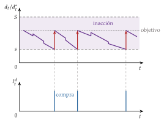
iii) Implicaciones
Inercia del gasto agregado: los hogares no ajustan todos a la vez, y el gasto agregado responde poco a poco a los choques, como en los datos de Mankiw.
Una respuesta que depende del ciclo: en una recesión hay menos hogares cerca del límite y la incertidumbre ensancha la banda, así que un mismo estímulo mueve menos el gasto en duraderos que en una expansión.
c) Extensiones: irreversibilidad e incertidumbre
Comprar un duradero es, en parte, irreversible: un coche nuevo pierde buena parte de su valor de reventa en cuanto sale del concesionario. Con incertidumbre, esperar tiene un valor de opción: quien aplaza la compra decide mejor cuando sabe más, y solo compra cuando el beneficio de hacerlo supera el coste más ese valor de esperar.
Más incertidumbre significa más valor de la opción y más espera. Bernanke (1983) lo formula para la inversión: son los malos resultados posibles los que frenan la decisión (el principio de las malas noticias); Dixit y Pindyck (1994) lo desarrollan con la teoría de las opciones reales [ver tema 3.A.34].
d) Evidencia empírica
Con datos de compras de automóviles de los hogares de Estados Unidos, Eberly (1994) encuentra un comportamiento de banda: los hogares compran cuando su stock se aleja lo bastante del deseado.
La lentitud con que se ajusta el gasto agregado se explica por la suma de muchos hogares que ajustan a saltos y en momentos distintos.
e) Valoración
Los costes de ajuste y la irreversibilidad explican lo que el modelo sin fricciones no explicaba: la inercia del gasto agregado, su sensibilidad a la incertidumbre y que su respuesta dependa del momento del ciclo.
A cambio, el agregado deja de depender de un consumidor representativo: hay que seguir la distribución de los hogares, como en los modelos de hogares heterogéneos (II.3.6). Veamos qué dicen los datos y qué implica para la política económica.
III.3. Evidencia empírica e implicaciones de política económica
Conclusión anticipada: los datos confirman que el gasto en duraderos es el componente más volátil del consumo y el que más se presta a adelantarse o aplazarse. De ahí su papel en la transmisión de la política económica, que cerramos con las implicaciones de todo el tema.
a) Evidencia empírica de los bienes duraderos
Volatilidad: en España, el gasto de los hogares en duraderos fue el 6,9 % de su consumo en 2025, pero es su componente más volátil: entre 1996 y 2026, la desviación típica de su tasa de variación interanual en volumen fue de 10,6 puntos, frente a 2,0 en los no duraderos, 4,5 en el consumo de los hogares y 3,9 en el PIB.27
Recesiones: es el primer gasto que se recorta. Cayó un 17,9 % interanual a comienzos de 2009 y un 12,6 % a finales de 2012, frente a caídas del 1,8 y del 4,3 % en los no duraderos.
Demanda embalsada: en el segundo trimestre de 2020, con las tiendas cerradas, el gasto en duraderos cayó un 43,4 % interanual; un año después creció un 68,6 %, mientras que el de no duraderos se movió un \(-2{,}7\) y un 1,5 %. Es la compra aplazada que vuelve en cuanto se puede (gráfico 10). Por eso el consumo de duraderos es mucho más procíclico que el resto [ver tema 3.A.42].
A lo largo de la vida: los hogares jóvenes acumulan primero duraderos, que además les sirven de garantía para pedir prestado, y después activos financieros; los duraderos explican una parte de la joroba del consumo a lo largo de la vida.
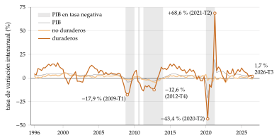
Fuente: INE, Contabilidad Nacional Trimestral de España (Instituto Nacional de Estadística, 2026b).
b) Implicaciones de política económica de los bienes duraderos
Política monetaria: el gasto en duraderos es el componente del consumo más sensible al tipo de interés, que entra en su coste de uso y en el del crédito con que se paga. Es una de las vías por las que la política monetaria llega antes a la demanda [ver tema 3.A.37].
Política fiscal: los incentivos temporales a la compra mueven mucho el gasto en duraderos, pero sobre todo lo adelantan:
el programa estadounidense de achatarramiento de 2009 (Cash for Clunkers) llevó a comprar unos 370.000 coches más en julio y agosto, que se compensaron casi por completo con menos compras en los 10 meses siguientes;
los planes franceses de 1994 y 1995 dejaron el mismo perfil: más ventas mientras duraron y menos después;
en España, el Programa de Incentivos al Vehículo Eficiente (PIVE), aprobado en septiembre de 2012 para sustituir turismos de más de 12 años, tuvo varias ediciones en los años siguientes.
Estabilización: estos incentivos sirven para mover la demanda en el tiempo, por ejemplo hacia una recesión, más que para crearla. Y funcionan peor justo cuando más falta hacen, en las recesiones, porque hay menos hogares cerca de renovar su stock; lo que se adelanta se devuelve después.
La vivienda: el duradero más importante se contabiliza como inversión [ver tema 3.A.30], pero transmite el ciclo inmobiliario al consumo por el efecto riqueza y por su papel como garantía del crédito.
c) Implicaciones de política económica de las teorías del consumo
Con los duraderos se completa el recorrido. La tabla 2 resume, teoría a teoría, qué política mueve el consumo, cuándo y por qué:
| Teoría | El consumo depende de | Rebaja de impuestos transitoria | Medida anunciada | Tipo de interés |
|---|---|---|---|---|
| Keynes (1936) | la renta corriente | efecto grande (multiplicador) | actúa al aplicarse | poco efecto |
| Renta permanente y ciclo vital | la renta permanente o la riqueza | efecto pequeño: se ahorra | actúa cuando cambia la renta permanente | efecto riqueza |
| Hall (1978) | las noticias sobre la renta permanente | efecto pequeño | actúa al anunciarse | poco efecto (ESI baja) |
| Equivalencia ricardiana | la senda del gasto público | ninguno, si se financia con deuda | ninguno | — |
| Liquidez, prudencia y hogares hand-to-mouth | la renta corriente y la liquidez | efecto grande en los hogares sin liquidez | actúa al aplicarse | por la renta, el empleo y el crédito |
| Bienes duraderos | el stock deseado y el coste de uso | un incentivo temporal adelanta compras | se aplaza la compra hasta que se aplica | efecto grande (coste de uso) |
Fuente: elaboración propia a partir de Romer (2019, cap. 8) y Jappelli y Pistaferri (2017).
Lectura de la tabla: de arriba abajo, la política fiscal pierde eficacia al pasar de Keynes a Hall y a la equivalencia ricardiana, y la recupera al reconocer las imperfecciones del entorno del hogar: riesgos que no puede asegurar, crédito al que no llega, costes de ajustar sus compras. La respuesta a la pregunta «¿qué política mueve el consumo?» depende de a qué hogares llega la medida y de qué bienes compran.
Recapitulación: el gasto en duraderos es una decisión sobre un stock, con un coste de uso, costes de ajuste e irreversibilidad. Se parece más a una inversión que a un consumo, y eso lo hace volátil, sensible al tipo de interés y fácil de adelantar o aplazar con la política económica.
Conclusión
Recapitulación:
En conclusión, la teoría del consumo ha recorrido 3 etapas.
Con certidumbre, el consumo pasa de depender de la renta corriente, en Keynes, a depender de los recursos de toda la vida, en Fisher, Friedman y Modigliani, y así se resuelve el enigma de Kuznets.
Con incertidumbre y expectativas racionales, solo las noticias lo mueven (Hall); pero los datos muestran que la renta corriente sigue importando, sobre todo en los hogares sin liquidez, por prudencia, por restricciones al crédito y por límites al autocontrol.
En los duraderos se suaviza el servicio y no el gasto, que se comporta como una inversión y amplifica el ciclo.
Relevancia:
De estas teorías depende cuánto rinde un cheque fiscal, cómo llega al gasto una subida de tipos, qué hará el ahorro con el envejecimiento y si un plan de achatarramiento crea demanda o solo la adelanta.
Extensiones:
La elección intertemporal en horizonte infinito y en generaciones solapadas [ver tema 3.A.29]; la inversión con costes de ajuste e irreversibilidad, pariente cercana de los duraderos [ver tema 3.A.34]; la equivalencia ricardiana [ver tema 3.A.39]; el estancamiento secular que Hansen dedujo de la función keynesiana y los multiplicadores con hogares que viven al día [ver tema 3.A.40]; los modelos con agentes heterogéneos en la política monetaria [ver tema 3.A.37]; el consumo en el ciclo [ver tema 3.A.42]; la valoración de activos basada en el consumo [ver tema 3.B.23], y la economía conductual [ver tema 3.A.1].
Opinión:
El consumidor de Fisher y de Hall sigue siendo la referencia, pero no es el hogar medio, sino el que tiene ahorros.
Para la política económica, la pregunta útil ya no es cuál es «la» propensión a consumir, sino cómo se reparte entre los hogares: la misma medida tiene efectos muy distintos según a quién llegue.
Idea final:
Volviendo al refrán del principio, guardar en tiempo de vacas gordas para las flacas es justo lo que hace el consumidor de la renta permanente.
El problema es que no todos los hogares tienen granero: muchos viven al día o no pueden pedir prestado, y para ellos las vacas flacas se notan enseguida en el plato.
Lo que gastamos hoy responde a lo que esperamos ganar en la vida, pero también a lo que entra este mes, y en esa doble dependencia está el margen de la política económica.
A. Anexo: la teoría neoclásica y el mercado de fondos prestables
a) Idea
Los neoclásicos (Jevons, Menger, Walras y Marshall) no elaboran una función de consumo agregada: estudian la demanda de cada bien dentro de la teoría del consumidor [ver tema 3.A.8].
En el agregado, el consumo es lo que queda tras decidir el ahorro, y sus determinantes son los del ahorro: la renta, el tipo de interés y la preferencia temporal. Por eso no es una teoría del consumo propiamente dicha, sino un antecedente.
b) Modelo
i) Supuestos
Economía cerrada en la que la producción la fija la oferta (pleno empleo) y los precios son flexibles.
La producción iguala al gasto, y la renta se reparte entre consumo, ahorro e impuestos: \[Y=C+I+G,\qquad Y=C+S+T\qquad\Longrightarrow\qquad S=I+(G-T).\]
ii) Desarrollo
La igualdad anterior es la condición de equilibrio del mercado de bienes, y se lee como un mercado de fondos prestables (gráfico 11):
la oferta de fondos es el ahorro, \(S(r)\), creciente en el tipo de interés real: un tipo más alto premia más el ahorro y, con la renta dada, reduce el consumo;
la demanda de fondos es la inversión más el déficit público, \(I(r)+G-T\), decreciente en el tipo de interés.
El tipo de interés que vacía el mercado, \(r^n\), es el tipo de interés natural de Wicksell: el que iguala el ahorro y la inversión con la producción de pleno empleo. En el gráfico, el equilibrio inicial es \(E_0\), con un ahorro \(S_0\).
Una subida del gasto público, de \(G_0\) a \(G_1\), desplaza la demanda de fondos a la derecha. Como la producción no cambia, para hacer sitio al gasto público el tipo de interés sube de \(r^n\) a \(r^n_1\), y el nuevo equilibrio es \(E_1\):
el ahorro sube de \(S_0\) a \(S_1\): con la renta dada, el consumo baja;
la inversión privada baja, al moverse a lo largo de la demanda inicial.
El gasto público desplaza a la vez al consumo y a la inversión privada (crowding-out): cambia la composición de la demanda, no su nivel.
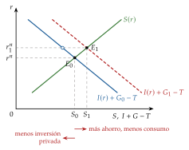
Fuente: elaboración propia.
iii) Implicaciones
Política monetaria: no afecta al consumo, porque solo mueve el nivel de precios y no el tipo de interés real: se cumple la teoría cuantitativa del dinero, con neutralidad del dinero y dicotomía clásica.28
Política fiscal: un aumento del gasto público reduce el consumo y la inversión privada a través del tipo de interés, pero no cambia la renta, que fija la oferta.
B. Anexo: la optimización intertemporal con \(T\) periodos
a) El problema
Comportamiento, preferencias y restricción: el consumidor de Fisher vive \(T+1\) periodos, \(t=0,\dots,T\), con certidumbre, y tiene una utilidad aditiva con descuento exponencial [ver tema 3.A.29]: \[U_0\equiv\sum_{t=0}^{T}\beta^t\,u(C_t),\qquad u'>0,\quad u''<0,\qquad\beta\equiv\frac{1}{1+\rho}.\]
En cada periodo, lo que gasta más lo que ahorra para el siguiente es igual a lo que gana más lo que le rinden los activos acumulados, \(b_t\), al tipo \(r\): \[\underbrace{C_t}_{\text{consumo}}+\underbrace{b_{t+1}}_{\text{activos para }t+1}=\underbrace{Y_t}_{\text{renta}}+\underbrace{(1+r)\,b_t}_{\text{activos con sus intereses}}\quad\Longleftrightarrow\quad b_{t+1}-b_t=Y_t+r\,b_t-C_t:\] el ahorro del periodo es la renta, laboral y financiera, menos el consumo. Es el vehículo para trasladar el consumo en el tiempo.
El problema, en tiempo discreto y con horizonte finito, es \[\begin{array}{rl}\displaystyle \max_{\{C_t\}} & \displaystyle \sum_{t=0}^{T}\beta^t\,u(C_t) \\ \text{s.a.} & b_{t+1}=(1+r)\,b_t+Y_t-C_t,\quad t=0,\dots,T \\ & b_0\ \text{dado} \\ & b_{T+1}\geq 0\end{array}\tag{18}\]
La condición terminal, \(b_{T+1}\geq 0\), hace falta:29
sin ella, la solución sería endeudarse sin límite y consumir con cargo a esa deuda, que nadie devolvería: hay que impedir morir endeudado, \(b_{T+1}<0\);
tampoco interesa morir con activos, \(b_{T+1}>0\), que podrían haberse consumido antes y dado utilidad.
En el óptimo, \(b_{T+1}=0\).
De las restricciones de cada periodo a la intertemporal: sustituyendo hacia delante \(b_1,b_2,\dots\) y con \(b_{T+1}=0\), \[\sum_{t=0}^{T}\frac{C_t}{(1+r)^t}=(1+r)\,b_0+\sum_{t=0}^{T}\frac{Y_t}{(1+r)^t}:\tag{19}\] el valor actual del consumo es igual a la riqueza, los activos iniciales más el valor actual de las rentas.30
b) La solución por sustitución
Despejando el consumo de cada restricción, \(C_t=(1+r)\,b_t+Y_t-b_{t+1}\), y sustituyéndolo en el objetivo, el problema pasa a ser de optimización sin restricciones en los activos \(b_1,\dots,b_{T}\): \[\max_{\{b_{t+1}\}}\ \sum_{t=0}^{T}\beta^t\,u\big((1+r)\,b_t+Y_t-b_{t+1}\big).\]
\(b_{t+1}\) aparece en el consumo de \(t\), con signo menos, y en el de \(t+1\), multiplicado por \(1+r\). La condición de primer orden es \[-\beta^t\,u'(C_t)+\beta^{t+1}(1+r)\,u'(C_{t+1})=0\quad\Longrightarrow\quad u'(C_t)=\beta(1+r)\,u'(C_{t+1}),\] la ecuación de Euler (4) entre 2 periodos cualesquiera.
Con el método de Lagrange sobre la restricción intertemporal (19), con un multiplicador \(\lambda\), las condiciones son \(\beta^t\,u'(C_t)=\lambda/(1+r)^t\) en cada \(t\), y dividiendo 2 consecutivas sale la misma ecuación. En problemas con incertidumbre o más complejos se usa la programación dinámica (la ecuación de Bellman), con condiciones de óptimo equivalentes [ver tema 3.A.29].
El caso de referencia: con \(\beta(1+r)=1\), \(u'(C_t)=u'(C_{t+1})\) y, como \(u'\) es decreciente, \(C_t=C_{t+1}\): el consumo es constante. Con la restricción intertemporal, \[C=\frac{(1+r)\,b_0+\sum_{t=0}^{T}Y_t/(1+r)^t}{\sum_{t=0}^{T}(1+r)^{-t}},\qquad\text{y con }r=\rho=0,\quad C=\frac{b_0+\sum_{t=0}^{T}Y_t}{T+1}.\] ∎
c) Implicaciones
Lo que se consume en un periodo no depende de lo que se gana en él, sino de la riqueza: de esta idea parte Friedman.
La senda del consumo es estable (plana si \(r=\rho\)) y el ahorro hace de amortiguador: es alto en los periodos de renta alta y negativo en los de renta baja. De esta idea parten Modigliani y Brumberg.
La forma de la senda de la renta no importa para el consumo, pero sí para el ahorro, que es la diferencia entre ambos.
Una medida anunciada hoy que cambie la renta futura cambia ya el consumo de hoy, porque cambia la riqueza.
Horizonte infinito: con \(T\to\infty\), la condición terminal pasa a ser la de no-Ponzi, \(\lim_{T\to\infty}b_{T+1}/(1+r)^T\geq 0\), que se cumple con igualdad en el óptimo (condición de transversalidad) [ver tema 3.A.29].
d) Los efectos de un cambio del tipo de interés: la ecuación de Slutsky con dotación
Con 2 periodos, el precio del consumo de mañana en términos del de hoy es \(p\equiv 1/(1+r)\), y la riqueza es \(\overline{W}=Y_1+p\,Y_2\), que depende de \(p\) porque el consumidor tiene una dotación, \((Y_1,Y_2)\). La ecuación de Slutsky con dotación [ver tema 3.A.9] descompone el efecto de un cambio de \(p\) sobre \(C_1\): \[\frac{dC_1}{dp}=\underbrace{\frac{\partial C_1^h}{\partial p}}_{\text{sustitución}\ (>0)}\ \underbrace{-\,C_2\,\frac{\partial C_1}{\partial\overline{W}}}_{\text{renta}\ (<0)}\ \underbrace{+\,Y_2\,\frac{\partial C_1}{\partial\overline{W}}}_{\text{riqueza o dotación}\ (>0)}=\frac{\partial C_1^h}{\partial p}+(Y_2-C_2)\,\frac{\partial C_1}{\partial\overline{W}},\tag{20}\] donde \(C_1^h\) es la demanda compensada (hicksiana) y \(C_1\) es un bien normal.
Una subida de \(r\) baja \(p\). Entonces:
el efecto sustitución reduce \(C_1\): el consumo de hoy se encarece frente al de mañana;
el efecto renta lo aumenta: el consumo de mañana se abarata y el consumidor es, en ese sentido, más rico;
el efecto riqueza lo reduce: la renta de mañana vale menos hoy.
Los 2 últimos juntos tienen el signo de \(C_2-Y_2=(1+r)(Y_1-C_1)\), es decir, del ahorro. En quien pide prestado (\(Y_1<C_1\)), el efecto riqueza pesa más que el de renta, los 2 juntos refuerzan el de sustitución y \(C_1\) baja; en quien presta (\(Y_1>C_1\)), pesa más el de renta, los 2 juntos se oponen al de sustitución y el resultado es ambiguo, como se ve en el gráfico 7.∎
C. Anexo: derivaciones del modelo de Hall y del C-CAPM
a) La solución cerrada de Hall con horizonte finito y \(r=\rho=0\)
Con \(r=\rho=0\), la restricción de cada periodo es \(b_{s+1}=b_s+Y_s-C_s\) y, con \(b_{T+1}=0\), la restricción intertemporal desde \(t\) es \(\sum_{s=t}^{T}C_s=b_t+\sum_{s=t}^{T}Y_s\), que se cumple en cada estado de la naturaleza. Tomando esperanzas en \(t\): \[\sum_{s=t}^{T}\mathbb{E}_t[C_s]=b_t+\sum_{s=t}^{T}\mathbb{E}_t[Y_s].\]
Por la ecuación (12) y la ley de las esperanzas iteradas, \(\mathbb{E}_t[C_s]=C_t\) para todo \(s\geq t\). Sustituyendo: \[C_t=\frac{1}{T-t+1}\Big[\,b_t+\sum_{s=t}^{T}\mathbb{E}_t[Y_s]\Big]:\] el consumidor consume la parte proporcional de sus activos y de la renta que espera ganar. Es la ecuación (8) del ciclo vital, con esperanzas.
Escribiendo lo mismo para \(t-1\) y usando \(b_t=b_{t-1}+Y_{t-1}-C_{t-1}\), sale \((T-t+1)\,C_{t-1}=b_t+\sum_{s=t}^{T}\mathbb{E}_{t-1}[Y_s]\). Restando: \[C_t-C_{t-1}=\frac{1}{T-t+1}\sum_{s=t}^{T}\big(\mathbb{E}_t[Y_s]-\mathbb{E}_{t-1}[Y_s]\big):\] el cambio del consumo es la revisión de la renta esperada, repartida entre los periodos que quedan. Solo cambia con las noticias, y una noticia que solo afecta a un periodo mueve poco el consumo; una que afecta a todos los que quedan lo mueve tanto como a la renta.∎
b) La deriva del consumo con la CRRA: ahorro precautorio
Con la CRRA, \(u'(C)=C^{-\theta}\), la ecuación de Euler estocástica (11) se escribe \[1=\beta(1+r)\,\mathbb{E}_t\Big[\Big(\frac{C_{t+1}}{C_t}\Big)^{-\theta}\Big]=\beta(1+r)\,\mathbb{E}_t\big[e^{-\theta\,\Delta\ln C_{t+1}}\big].\]
Si \(\Delta\ln C_{t+1}\) sigue, condicionada a la información de \(t\), una normal, \(e^{-\theta\Delta\ln C_{t+1}}\) es lognormal y \(\mathbb{E}_t\big[e^{-\theta\Delta\ln C_{t+1}}\big]=\exp\big\{-\theta\,\mathbb{E}_t[\Delta\ln C_{t+1}]+\tfrac{\theta^2}{2}\operatorname{var}_t(\Delta\ln C_{t+1})\big\}\).
Tomando logaritmos, con \(\ln\beta=-\ln(1+\rho)\simeq-\rho\) y \(\ln(1+r)\simeq r\): \[0\simeq r-\rho-\theta\,\mathbb{E}_t[\Delta\ln C_{t+1}]+\frac{\theta^2}{2}\operatorname{var}_t(\Delta\ln C_{t+1})\quad\Longrightarrow\quad\mathbb{E}_t[\Delta\ln C_{t+1}]\simeq\frac{1}{\theta}\,(r-\rho)+\frac{\theta}{2}\operatorname{var}_t(\Delta\ln C_{t+1}).\]
El primer término es la tendencia por la diferencia entre el tipo de interés y la tasa de descuento (II.3.3); el segundo, el ahorro precautorio (II.3.1): cuanto más incierto es el consumo futuro, más se ahorra hoy y más empinada es la senda, aunque \(r=\rho\). Con la utilidad cuadrática (\(u'''=0\)) ese término no existe.∎
c) La prima de riesgo en el C-CAPM
Para cualquier activo \(i\), la ecuación (14) es \(1=\mathbb{E}_t\big[m_{t+1}\,(1+r_{i,t+1})\big]\). Para el activo sin riesgo, que rinde \(r_f\) con certeza, \[1=(1+r_f)\,\mathbb{E}_t[m_{t+1}]\quad\Longrightarrow\quad 1+r_f=\frac{1}{\mathbb{E}_t[m_{t+1}]}.\]
Para el activo con riesgo, usando que la esperanza de un producto es el producto de las esperanzas más la covarianza, \[1=\mathbb{E}_t[m_{t+1}]\,\mathbb{E}_t[1+r_{i,t+1}]+\operatorname{Cov}_t(m_{t+1},r_{i,t+1})\quad\Longrightarrow\quad\mathbb{E}_t[r_{i,t+1}]-r_f=-(1+r_f)\operatorname{Cov}_t(m_{t+1},r_{i,t+1}).\]
Con la CRRA, \(m_{t+1}=\beta\,(C_{t+1}/C_t)^{-\theta}\simeq\beta\,(1-\theta\,\Delta\ln C_{t+1})\) en primera aproximación, así que la covarianza es \(\operatorname{Cov}_t(m_{t+1},r_{i,t+1})\simeq-\beta\theta\operatorname{Cov}_t(r_{i,t+1},\Delta\ln C_{t+1})\). Con \(\beta(1+r_f)\simeq 1\), \[\mathbb{E}_t[r_{i,t+1}]-r_f\simeq\theta\operatorname{Cov}_t\big(r_{i,t+1},\Delta\ln C_{t+1}\big).\] Con rendimientos y consumo lognormales, la relación se cumple con exactitud en logaritmos, con una corrección de media varianza del rendimiento.∎
Lectura: un activo exige una prima si rinde mucho cuando el consumo ya es alto, porque no asegura; uno que rinde cuando el consumo cae es un seguro y se acepta con menos rendimiento. La prima depende de la covarianza con el consumo y de la aversión al riesgo.
d) El enigma de la prima de riesgo
Aplicada a la bolsa, la fórmula dice que la prima es \(\theta\) por la covarianza entre el rendimiento de las acciones y el crecimiento del consumo. En Estados Unidos, entre 1889 y 1978, las acciones rindieron unos 6 puntos al año más que los activos seguros, pero el consumo varía tan poco, y su covarianza con la bolsa es tan pequeña, que con aversiones razonables (\(\theta\leq 10\)) el modelo no da una prima mayor de 0,4 puntos.
Para reproducir la prima observada haría falta una aversión al riesgo muy superior a la que se considera razonable. Entre las respuestas están los hábitos, que hacen al hogar muy averso al riesgo cuando su consumo se acerca a lo que está acostumbrado (II.3.2), y los modelos con hogares heterogéneos y riesgos que no se pueden asegurar.
D. Anexo: el problema completo de los bienes duraderos
a) Las condiciones de primer orden y el coste de uso
La lagrangiana del problema (15), con un multiplicador \(\lambda_t\) para la restricción de cada periodo, es \[\mathcal{L}=\sum_{t=0}^{T}\beta^t\Big\{u(C_t,d_t)+\lambda_t\Big[(1+r)\,b_t+Y_t-C_t-p^d_t\big(d_t-(1-\delta)\,d_{t-1}\big)-b_{t+1}\Big]\Big\}.\]
Condiciones de primer orden:
respecto a \(C_t\): \(u_C(C_t,d_t)=\lambda_t\);
respecto a \(b_{t+1}\), que aparece en la restricción de \(t\) y en la de \(t+1\): \(-\beta^t\lambda_t+\beta^{t+1}(1+r)\,\lambda_{t+1}=0\), es decir, \(\lambda_t=\beta(1+r)\,\lambda_{t+1}\), que con la anterior es la ecuación de Euler del no duradero, \(u_C(C_t,d_t)=\beta(1+r)\,u_C(C_{t+1},d_{t+1})\);
respecto a \(d_t\), que aparece en la restricción de \(t\) y, por la depreciación, en la de \(t+1\): \(u_d(C_t,d_t)-\lambda_t\,p^d_t+\beta\,\lambda_{t+1}\,(1-\delta)\,p^d_{t+1}=0\), que con la primera es la ecuación de Euler del duradero: \[p^d_t\,u_C(C_t,d_t)=u_d(C_t,d_t)+\beta\,(1-\delta)\,p^d_{t+1}\,u_C(C_{t+1},d_{t+1}).\]
Sustituyendo \(\lambda_{t+1}=\lambda_t/[\beta(1+r)]\) en la tercera y dividiendo por \(\lambda_t=u_C(C_t,d_t)\): \[\frac{u_d(C_t,d_t)}{u_C(C_t,d_t)}=p^d_t-\frac{1-\delta}{1+r}\,p^d_{t+1}\equiv c^d_t.\]
Con \(p^d_{t+1}=p^d_t\,(1+\pi^d_{t+1})\): \[c^d_t=p^d_t\,\frac{(1+r)-(1-\delta)(1+\pi^d_{t+1})}{1+r}=p^d_t\,\frac{r+\delta-\pi^d_{t+1}+\delta\,\pi^d_{t+1}}{1+r}\simeq p^d_t\,\big(r+\delta-\pi^d_{t+1}\big),\] la ecuación (16), paralela al coste de uso del capital, \(c_K=P^K(r+\delta-\dot{P}^K/P^K)\) [ver tema 3.A.34].∎
b) Los duraderos en el modelo de Hall
Supuestos: renta incierta, expectativas racionales, \(\beta(1+r)=1\), precio relativo constante, \(p^d_t=p^d\) (y por tanto un coste de uso constante, \(c^d=p^d(r+\delta)/(1+r)\)), y una utilidad separable, \(u(C_t)+v(d_t)\), con \(v\) cuadrática.
Con incertidumbre, las 2 ecuaciones de Euler llevan esperanzas: \(u'(C_t)=\mathbb{E}_t[u'(C_{t+1})]\) y \(p^d\,u'(C_t)=v'(d_t)+\beta(1-\delta)\,p^d\,\mathbb{E}_t[u'(C_{t+1})]\). Sustituyendo la primera en la segunda: \[v'(d_t)=p^d\,u'(C_t)\Big[1-\frac{1-\delta}{1+r}\Big]=c^d\,u'(C_t).\]
Como \(u'(C_t)\) es una martingala y \(c^d\) es constante, \(v'(d_t)\) también lo es; y como \(v'\) es lineal, el stock sigue un paseo aleatorio: \(d_{t+1}=d_t+e_{t+1}\), con \(\mathbb{E}_t[e_{t+1}]=0\).
El gasto: \(I^d_t=d_t-(1-\delta)\,d_{t-1}=\delta\,d_{t-1}+e_t\), de modo que \[I^d_{t+1}-I^d_t=\delta\,(d_t-d_{t-1})+e_{t+1}-e_t=e_{t+1}-(1-\delta)\,e_t,\] la ecuación (17): el gasto sigue un proceso ARMA(1,1) con raíz unitaria, y sus cambios, una media móvil de primer orden con coeficiente \(-(1-\delta)\).
La autocorrelación: la covarianza entre 2 cambios consecutivos es \(-(1-\delta)\operatorname{var}(e)\) y la varianza de cada uno, \([1+(1-\delta)^2]\operatorname{var}(e)\), así que la autocorrelación es \(-(1-\delta)/[1+(1-\delta)^2]\); con una depreciación trimestral del 5 %, \(-0{,}95/1{,}9025\simeq-0{,}50\).
Si los bienes no duraran (\(\delta=1\)), el gasto sería el stock y seguiría un paseo aleatorio, como el consumo de Hall. Que los datos se parezcan más a esto que a la autocorrelación negativa es el rechazo que encuentra Mankiw.∎
E. Anexo: preguntas de test
Preguntas tipo test del primer ejercicio: simulador de test.
Bibliografía
Para ver. La lista de vídeos «Docencia: análisis intertemporal» (Economedia, YouTube) explica paso a paso la elección intertemporal del consumo.↩︎
La tesis del estancamiento secular la formuló Alvin Hansen, profesor en Harvard que se convirtió al keynesianismo tras la Teoría general, en Full Recovery or Stagnation? y, sobre todo, en su discurso como presidente de la American Economic Association, pronunciado en Detroit el 28 de diciembre de 1938 y publicado en 1939 con el título «Economic Progress and Declining Population Growth». Su argumento central era que la demanda sería insuficiente para asegurar el crecimiento necesario, y auguraba una época de débil progreso o incluso de estancamiento.
Para Hansen, las fuerzas que según la corriente principal del pensamiento clásico impulsaban el crecimiento eran 3: i) las innovaciones tecnológicas; ii) la apertura de nuevos territorios y el descubrimiento de nuevos recursos, y iii) el aumento de la población. Habían generado un crecimiento robusto en el siglo XIX, a pesar de los altibajos del ciclo, pero los años de entreguerras, y en particular la Gran Depresión de los años 30, sugerían que se habían desgastado. Hansen interpretó los problemas de la época no solo como una desaceleración cíclica particularmente aguda, sino como prueba de un estancamiento secular provocado por el cierre de las fronteras económicas, la lentitud de la innovación y, no menos importante, la fuerte caída del crecimiento de la población.
El argumento se hace eco del que Keynes había expuesto en su Galton Lecture ante la Eugenics Society, el 16 de febrero de 1937: una población que deja de crecer reduce las oportunidades de inversión rentable sin reducir el ahorro, y empuja a la economía hacia un equilibrio con recursos ociosos y paro, salvo que aumente el consumo o baje el tipo de interés. Hansen insistía en los cambios demográficos: además de su efecto directo sobre la inversión y la producción, el crecimiento de la población facilitaría el progreso técnico, una visión muy alejada de la del reverendo Thomas Robert Malthus. Una desaceleración de la población y del progreso técnico reduciría las oportunidades de inversión, el ahorro se acumularía sin gastarse y el crecimiento se desplomaría salvo que los gobiernos estimularan la demanda agregada.
Las necesidades de la economía de guerra resolvieron el problema del empleo, y las décadas de posguerra trajeron la demanda acumulada de los consumidores, un resurgir de la innovación, la apertura comercial y un fuerte aumento de la población: crecimiento rápido y rentas crecientes. El debate ha vuelto tras la Gran Recesión [ver tema 3.A.40]; lo repasa una tribuna de El Confidencial del 7 de diciembre de 2019.↩︎
Simon Kuznets recibió el Premio Nobel de Economía en 1971 «por su interpretación, fundada empíricamente, del crecimiento económico, que ha llevado a una comprensión nueva y más profunda de la estructura económica y social y del proceso de desarrollo».↩︎
Se podría decir que Keynes fundamenta su función de consumo en la ley psicológica fundamental y Duesenberry en los efectos demostración y trinquete. Lo estrictamente correcto es que los modelos que siguen, a diferencia de los anteriores, se derivan de un problema de optimización de los agentes.↩︎
La impaciencia es una idea antigua. Demócrito (siglos V-IV a. C.) contraponía ya el bien presente al futuro: «el viejo ha sido joven, pero el joven no sabe si llegará a viejo; por eso el bien ya alcanzado vale más que el futuro incierto» (fragmento 68 B 295 de Diels-Kranz; traducción propia a partir de Freeman (1948)).↩︎
Con 2 periodos, \(u''<0\) implica que las curvas de indiferencia en \((C_1,C_2)\) son convexas. La implicación no va en sentido contrario: unas curvas de indiferencia convexas no exigen una utilidad marginal decreciente.↩︎
Leonhard Euler (1707-1783) trabajó en la Academia de Ciencias de San Petersburgo entre 1727 y 1741 y, tras 25 años en Berlín, volvió a ella en 1766, en tiempos de Catalina la Grande, hasta su muerte. Su ecuación nace del cálculo de variaciones, cuyo primer problema fue el de la braquistócrona, la curva por la que un cuerpo que parte del reposo baja más deprisa entre 2 puntos solo por la gravedad, que planteó Johann Bernoulli en 1696. Euler dio en 1744 un método general para esa clase de problemas, del que sale la ecuación que hoy se llama de Euler-Lagrange. La condición de óptimo intertemporal de la economía es su versión en tiempo discreto.
↩︎
Es el alisamiento del consumo (consumption smoothing). Con \(r\neq\rho\) la senda deja de ser plana, pero se mantienen sus rasgos: i) la tasa de crecimiento del consumo solo cambia si cambian el tipo de interés o la tasa de descuento (II.3); ii) con un mercado de capitales perfecto no depende de cómo se reparta la renta en el tiempo, y iii) el nivel del consumo depende de la riqueza total del agente, sus activos más el valor actual de sus rentas futuras, y no de la renta del periodo.↩︎
Con un mercado de capitales perfecto, la decisión se separa en 2 pasos: primero se elige lo que hace máxima la riqueza \(\overline{W}\) y después se reparte el consumo según las preferencias (teorema de separación de Fisher). Es la base de la decisión de invertir de la empresa [ver tema 3.A.34] y de la de formarse, donde la renta deja de ser una dotación dada y se elige sobre una frontera de posibilidades de renta [ver tema 3.A.25]. Con restricciones de liquidez, la separación se rompe.↩︎
Milton Friedman recibió el Premio Nobel de Economía en 1976 «por sus logros en los campos del análisis del consumo, la historia y la teoría monetarias, y por su demostración de la complejidad de la política de estabilización».↩︎
Con los datos de Estados Unidos, Friedman (1957, 226) estima, con cautela, que el horizonte de los hogares es de unos 3 años: la renta permanente pondera sobre todo la renta observada de los 3 últimos años. Advierte de que los resultados son poco sensibles a la longitud de ese horizonte.↩︎
El argumento de Friedman es que una medida transitoria cambia sobre todo la renta transitoria. La equivalencia ricardiana va más allá: si el gasto público no cambia, una rebaja de impuestos financiada con deuda no altera la riqueza de los hogares, porque anuncia impuestos futuros del mismo valor actual, y se ahorra entera aunque sea permanente. Exige horizonte infinito (o herencias altruistas), impuestos de suma fija y ausencia de restricciones de liquidez [ver tema 3.A.39].↩︎
Es una aportación de Friedman: los cambios en los tipos de interés y en la cantidad de dinero alteran la riqueza y, con ella, la renta permanente y el consumo.↩︎
Franco Modigliani recibió el Premio Nobel de Economía en 1985 «por sus análisis pioneros del ahorro y de los mercados financieros».↩︎
Sería creciente si \(r>\rho\) y decreciente si \(r<\rho\); con incertidumbre, el ahorro precautorio también lo inclina hacia arriba (II.3).↩︎
Escribimos \(b\) para el parámetro de la utilidad cuadrática, como en la tabla 1; no debe confundirse con \(b_t\), los activos netos del hogar al principio de \(t\).↩︎
En sentido estricto, el consumo sigue una martingala, una serie cuyo valor esperado mañana es el de hoy, de modo que sus cambios son impredecibles. Un paseo aleatorio es una martingala cuyos cambios son, además, independientes e idénticamente distribuidos; en la práctica, los 2 términos se usan como sinónimos. Cuidado: un proceso autorregresivo de primer orden, \(X_{t+1}=c+\phi\,X_t+\varepsilon_{t+1}\), no es en general una martingala, porque \(\mathbb{E}_t[X_{t+1}]=c+\phi\,X_t\); solo lo es si \(c=0\) y \(\phi=1\).↩︎
Aquí \(\lambda\) es la fracción de la renta que va a hogares que consumen su renta corriente, como en Campbell y Mankiw (1989); no es un multiplicador de Lagrange.↩︎
Las estimaciones van de 0,35 a 0,7 según los instrumentos. Para los autores, decidir cuánto consumir y ahorrar optimizando en el tiempo exige muchos cálculos, y muchos hogares prefieren reglas sencillas basadas en la renta corriente (II.3.6). Encuentran también que el crecimiento del consumo de los hogares que siguen a Hall apenas responde al tipo de interés real (II.3.3).↩︎
El Comité del Premio Nobel destaca este artículo de Deaton (1991) como una de las claves para resolver la paradoja.↩︎
Con hábitos, la utilidad marginal de \(C_t\) incluye su efecto sobre la utilidad de mañana, \(u'(X_t)-\beta h\,\mathbb{E}_t[u'(X_{t+1})]\), con \(X_t\equiv C_t-hC_{t-1}\). Si \(X_t\) es una martingala y \(u'\) es lineal, esa utilidad marginal también lo es, y se cumple la ecuación de Euler con \(\beta(1+r)=1\). Hace falta incertidumbre para que haya noticias, pero, dentro del marco de Hall, basta con la no separabilidad para romper el paseo aleatorio del consumo.↩︎
La ESI mide cuánto cambia el cociente \(C_2/C_1\), en porcentaje, cuando cambia un 1 % su precio relativo, \(1+r\). Con la CRRA, una sola letra recoge 2 cosas distintas: la aversión al riesgo entre estados de la naturaleza (\(\theta\)) y la disposición a sustituir consumo entre periodos (\(1/\theta\)).↩︎
Con el descuento cuasihiperbólico, la utilidad del hogar en \(t\) es \(U_t=u(C_t)+\beta\sum_{s=1}^{\infty}\delta^s\,u(C_{t+s})\), con \(0<\beta<1\) y \(0<\delta<1\): entre hoy y mañana descuenta con \(\beta\delta\) y entre 2 periodos futuros, solo con \(\delta\). Con \(\beta=1\) es el descuento exponencial de Samuelson (1937). Cuidado con las letras: en esta nota, \(\delta\) es el factor de descuento exponencial y \(\beta\) el sesgo hacia el presente; en el resto del tema, \(\beta\equiv 1/(1+\rho)\) es el factor de descuento y \(\delta\), la tasa de depreciación de los duraderos.↩︎
Richard Thaler recibió el Premio Nobel de Economía en 2017 «por sus contribuciones a la economía conductual».↩︎
En este bloque, \(C_t\) es el consumo de bienes no duraderos y servicios, \(d_t\) el stock de duraderos y \(\delta\) su tasa de depreciación.↩︎
No debe confundirse \(c^d_t\) con \(c\), la propensión marginal a consumir de Keynes.↩︎
Son datos del consumo interior de los hogares, que incluye el gasto de los no residentes en España: el INE no publica el desglose por durabilidad del consumo nacional. Sin los años de la pandemia (1996-2019), las desviaciones típicas son de 8,1 puntos en los duraderos, 2,0 en los no duraderos, 2,7 en el consumo de los hogares y 2,3 en el PIB.↩︎
Conviene distinguir neutralidad y dicotomía. El dinero es neutral si un cambio en su cantidad no altera las variables reales (empleo y producción), y superneutral si tampoco lo hace un cambio en su tasa de crecimiento, algo que aquí no tiene sentido porque el modelo es estático. Hay dicotomía clásica si las variables reales se determinan en un subsistema de ecuaciones en el que no intervienen ni la cantidad de dinero ni el nivel de precios: el dinero es un velo. Como advierte Sargent (1987, 47): «Obviamente, neutralidad y dicotomía son conceptos distintos. Un sistema neutral no necesariamente dicotomiza, mientras que un sistema en el que el “dinero es un velo” no tiene por qué satisfacer nuestra definición de sistema neutral». Sargent construye un ejemplo en el que se cumple la dicotomía, pero no la neutralidad.↩︎
Corrige la nota del original, que hablaba de una «tasa de ahorro negativa en \(T\)»: lo que se descarta es morir endeudado, \(b_{T+1}<0\).↩︎
Con certidumbre y un activo sin riesgo, las restricciones de cada periodo siempre se pueden resumir en la intertemporal. Con incertidumbre, hacen falta mercados completos (un activo para cada estado de la naturaleza); si son incompletos, no hay una sola restricción intertemporal y el problema se resuelve con las restricciones de cada periodo y cada estado, como en el de Hall (10). Si hay activos redundantes (unos replican a otros), la restricción intertemporal se sigue cumpliendo; lo que no se puede determinar es cuánto se tiene de cada activo, aunque el consumo sí quede determinado. La macroeconomía moderna trata estas situaciones con modelos macrofinancieros.↩︎